Analysis
Full analyses and plots
Method
This part provide additional information concerning the Method. For the general design, please refer to the paper.
Participants
56 participants participated in this study (38 women and 18 men. They were between the ages of 18 and 50 (M= 24, SD=5 . Please refer to Predictors to see more about the distribution of age, gender, and other measures.
Setup
Stimuli
Stimuli were squares of size 300*300 pixel when being presented the 8 together, and 400*400 pixel the rest of the time.
Procedure
Here are presented the instructions foe each part.
Passive exposure: Dadelijk zie je een aantal afbeeldingen een voor een op het scherm verschijnen samen met het woord in fantasietaal dat die afbeelding beschrijft. Probeer zo goed mogelijk het juiste woord bij elke afbeelding te onthouden.
First Testing (Round 0): Nu is het tijd om te testen hoe goed je de fantasietaal onthoudt! U ziet dezelfde afbeeldingen. Denk goed na over hoe je ze een naam zou geven en druk op enter als je klaar bent om te typen (tijdens het typen kun je de scene niet meer zien). Maak je geen zorgen als je de naam van de afbeelding niet meer weet en beproef je geluk door een woord te typen.
Communication game, Guesser: Je partner heeft een afbeelding gezien en een woord getypt om het te beschrijven. Lees het woord op de computer van je partner en kies de juiste afbeelding uit de 8 mogelijke afbeeldingen (gebruik 1-2-3-4-5-6-7-8 op het toetsenbord om een keuze te maken). Je krijgt feedback over je keuze, probeer er van te leren. Maak tijdens het experiment zo min mogelijk fouten! Vergeet niet om de feedback aan je partner te laten zien. Je krijgt feedback over je keuze, probeer daarvan te leren
Communication game, Producer: Nu krijg je een afbeelding te zien. Denk na over hoe je het zou noemen en druk op Enter als je klaar bent om te typen. Als je klaar bent met het schrijven van het woord, druk je nogmaals op enter en draai je de computer zodat je partner het woord kan lezen en kan raden welke afbeelding je beschrijft. Tijdens deze taak mag je de taal niet wijzigen naar Nederlands of andere bestaande talen. Gebruik ook niets dat heel erg op het Nederlands of andere talen lijkt. Ook mag je geen Nederlandse afkortingen, afkortingen of acroniemen gebruiken. Let op, je kunt niet alle letters gebruiken: alleen de letters die zichtbaar zijn op het toetsenbord kunnen worden gebruikt.
- Testing (Round 10): Nu hoef je niet meer met je partner te communiceren. U moet een reeks afbeeldingen een naam geven in de nieuwe taal die u gebruikte.
Measures
All measures are described within the results.
Additional tasks
The study included three additional tasks.
Dictator Game
This version of the Dictator Game is adapted in the context of the experiment. We included this task as another way to measure prosociality. Participants were presented with the following fictional situation:
English version:
Imagine that I give you an additional amount of 100 euros due to the excellent performance of your group during this experiment. Now, you have the choice to keep the full amount for yourself or to share it with the other participants. Since the other participants are not aware of this extra reward, the choice is entirely up to you. How much do you decide to share with the other participants?
They had the choice between:
- keeping everything for them (1)
- sharing but keeping more for them (2)
- equally splitting (3)
- sharing but keeping less (4)
- giving everything (5)
Dutch version:
Stel je voor dat ik je een extra bedrag van 100 euro geef vanwege de uitstekende prestaties van jouw groep tijdens dit experiment. Nu heb je de keuze om het volledige bedrag voor jezelf te houden, of het te delen met de andere deelnemers. Aangezien de andere deelnemers niet op de hoogte zijn van deze extra beloning, is de keuze geheel aan jou. Hoeveel besluit je te delen met de andere deelnemers?
- (1): 0 euro (Ik houd alle 100 euro)
- (2): Tussen 0 en 75 euro (Ik deel, maar houd meer voor mezelf)
- (3): 75 euro (25 euro voor iedereen)
- (4): Tussen 75 en 100 euro (Ik houd minder dan hen)
- (5): 100 euro (Ik geef alles weg)
Task-switching experiment
The task-switching experiment adapted from Roger and Monsell’s paradigm. An online version is available to try at this address: https://www.psytoolkit.org/experiment-library/taskswitching.html
The code of the task-switching experiment and the prosciality experiment are all available in the same file as for the code of the main experiment (see my github mathjoss/ExpCommunityVariation).
Data
Terminology
Throughout the results, we will use the following terminology:
Group refers to the group ID: when using the terminology “for each group”, I will mean for each group of 4 that came to the lab.
Condition refers to the group type: heterogenous or control.
Initial labels refers to the 8 initial words used to describe aliens presented in the passive exposure
Unbiased participants are participant 2, 3, and 4 (who can produce all letters) and biased participant designate participant 1 (who can not produce a and k). This is consistent across all groups.
Unbiased letters designate letters who can be produced by all participants (p, s, n, e, i, u) and biased letters designate the 2 letters that cannot be produced by the biased participants
Read files
We proceed and clean the files using the following methods:
After each group passation, we use the file CleanUpFiles.R to perform the following steps:
Data. merge the dataset obtained from the 4 participants into 1 single file using the R file
Prosociality. For each participant, we compute the total prosociality score by additioning the results on each question
Inverse efficiency. For each participant, we compute the inverse efficiency, where inverse efficiency is defined as mean(time)/mean(accuracy)
Cognitive Flexibility. We measure each participant’s cognitive flexibility by examining their performance in a task that involves both numbers and letters. To do this, we calculate two average times: one for when the participant does not switch tasks (moving between letters or numbers) and another for when they do switch tasks (moving from numbers to letters or vice versa). The difference between these two averages represents their cognitive flexibility. We further normalize this difference by dividing it by the mean time required for task switching.
The “data” files are named after the group number and type, and it is saved as a .csv file. For instance, Group1HT.csv represents the data file for Group 1 Heterogenous.
The “other” measures (prosociality, inverse efficiency, cognitive flexibility) are summarized in a separate data file starting with Other_Group…, which includes the group number and type. This file also contains information about age, gender, and results in the dictator game.
We merge datasets from all groups, thus obtaining two datasets:
- the dataset with data from all groups:
GroupNum GroupType TypeTest Producer Guesser
1:832 Control:2912 ComGame :4032 1:1456 1 :1008
2:832 Hetero :2912 FirstTesting : 448 2:1456 2 :1008
3:832 PassiveExposure: 896 3:1456 3 :1008
4:832 SecondTesting : 448 4:1456 4 :1008
5:832 NA's:1792
6:832
7:832
Round Shape ACC Word
Min. : 0.000 aike : 728 Min. :0.0000 Length:5824
1st Qu.: 1.000 anap : 728 1st Qu.:0.0000 Class :character
Median : 4.000 esip : 728 Median :1.0000 Mode :character
Mean : 4.231 kesip : 728 Mean :0.6772
3rd Qu.: 7.000 nekuki : 728 3rd Qu.:1.0000
Max. :10.000 nus : 728 Max. :1.0000
(Other):1456 NA's :1344
ID_CG index pair DistInitLabel2 GroupID
Min. :0.000 Min. : 1.00 1_2 : 672 Min. :0.0000 1_Control: 416
1st Qu.:0.000 1st Qu.: 28.75 1_3 : 672 1st Qu.:0.5000 1_Hetero : 416
Median :2.000 Median : 80.50 1_4 : 672 Median :1.0000 2_Control: 416
Mean :2.423 Mean : 82.96 2_3 : 672 Mean :0.7693 2_Hetero : 416
3rd Qu.:5.000 3rd Qu.:132.25 2_4 : 672 3rd Qu.:1.0000 3_Control: 416
Max. :7.000 Max. :176.00 3_4 : 672 Max. :1.0000 3_Hetero : 416
NA's:1792 (Other) :3328
DistInitLabel
Min. :0.0000
1st Qu.:0.5000
Median :1.0000
Mean :0.7482
3rd Qu.:1.0000
Max. :1.0000
- the dataset with other information from all groups:
PartID GroupNum prosoc DictatorGame Age
Min. :1.00 Min. :1 Min. :1.812 Min. :1.000 Min. :18.00
1st Qu.:1.75 1st Qu.:2 1st Qu.:3.500 1st Qu.:3.000 1st Qu.:20.00
Median :2.50 Median :4 Median :3.812 Median :3.000 Median :23.00
Mean :2.50 Mean :4 Mean :3.714 Mean :2.786 Mean :24.02
3rd Qu.:3.25 3rd Qu.:6 3rd Qu.:4.062 3rd Qu.:3.000 3rd Qu.:27.00
Max. :4.00 Max. :7 Max. :4.438 Max. :5.000 Max. :37.00
Gender WorkingMem difference CogFlexibility
Length:56 Min. :1.061 Min. :-1.0784 Min. :-0.6577
Class :character 1st Qu.:1.301 1st Qu.: 0.3999 1st Qu.: 0.2424
Mode :character Median :1.551 Median : 0.5361 Median : 0.3271
Mean :1.695 Mean : 0.6125 Mean : 0.3164
3rd Qu.:1.863 3rd Qu.: 0.8278 3rd Qu.: 0.4237
Max. :3.324 Max. : 2.0339 Max. : 0.6110
GroupType
Length:56
Class :character
Mode :character
Raw outputs
We look at the productions during the FirstTesting and the last testing (called here SecondTesting). As a reminder, FirstTesting occurs after the passive exposure, and SecondTesting occurs after the communication game.
Heterogenous groups
Group 1:
Before training:
| PartID | aike | anap | esip | kesip | nekuki | nus | nusa | puak |
|---|---|---|---|---|---|---|---|---|
| 1 | uine | unip | esip | nesi | nesipi | nus | nuse | inus |
| 2 | suka | nuki | pasip | nusip | pikak | nup | nuki | nukik |
| 3 | aike | akin | sepik | kipe | nekuki | nus | nusa | peki |
| 4 | paik | piak | esup | nenusa | nekuki | nus | nusa | piak |
After training:
| PartID | aike | anap | esip | kesip | nekuki | nus | nusa | puak |
|---|---|---|---|---|---|---|---|---|
| 1 | pine | enup | esip | nenuse | nepipi | nus | nuse | puni |
| 2 | paik | esup | esip | nanusip | nukeki | nuk | suka | ekip |
| 3 | paik | kusip | esip | nenusa | nenuki | nus | nusa | nuki |
| 4 | paik | sanip | esip | nenusa | nenuka | nus | nusa | senip |
Group 2:
Before training:
| PartID | aike | anap | esip | kesip | nekuki | nus | nusa | puak |
|---|---|---|---|---|---|---|---|---|
| 1 | eipe | unup | esip | nesip | nepupi | esu | nusu | puei |
| 2 | aike | upak | esip | kesip | nusa | nusa | nusa | puak |
| 3 | anap | anap | esip | kesip | nekuki | nus | nusa | puak |
| 4 | aike | kusap | esi | kesi | sup | nus | nuk | nuki |
After training:
| PartID | aike | anap | esip | kesip | nekuki | nus | nusa | puak |
|---|---|---|---|---|---|---|---|---|
| 1 | eipe | unup | esip | nesip | nepupi | nus | nusu | pue |
| 2 | aike | anap | pua | kesip | kukupa | nus | nusa | pua |
| 3 | aike | anap | esip | kesip | nekuki | nus | nusa | pua |
| 4 | aike | anap | esip | kesip | kukupa | nus | nusa | pua |
Group 3:
Before training:
| PartID | aike | anap | esip | kesip | nekuki | nus | nusa | puak |
|---|---|---|---|---|---|---|---|---|
| 1 | ie | ee | nus | en | neiu | nus | nus | pu |
| 2 | aike | anap | kesip | enis | nukaki | nus | esip | nesip |
| 3 | enik | anak | naku | kesin | enik | nus | nusa | nekuki |
| 4 | aike | anap | esip | kesip | nekuki | nuak | nusa | nuak |
After training:
| PartID | aike | anap | esip | kesip | nekuki | nus | nusa | puak |
|---|---|---|---|---|---|---|---|---|
| 1 | ie | nus | esip | esip | nuui | nus | nus | pu |
| 2 | aike | anap | esip | uiuie | nukaki | nus | nusp | iesie |
| 3 | suki | nupa | esip | kesip | nekuki | nus | nusa | nekiki |
| 4 | aike | anap | esip | kesip | nekuki | nus | nusa | nuak |
Group 4:
Before training:
| PartID | aike | anap | esip | kesip | nekuki | nus | nusa | puak |
|---|---|---|---|---|---|---|---|---|
| 1 | ie | np | nesis | esis | neui | nus | ns | pien |
| 2 | puak | asap | esip | kesip | puak | nup | nuki | puak |
| 3 | aike | enus | sup | esun | kuapa | esip | enus | kaup |
| 4 | aike | anap | nusa | aise | nepik | nus | anap | puak |
After training:
| PartID | aike | anap | esip | kesip | nekuki | nus | nusa | puak |
|---|---|---|---|---|---|---|---|---|
| 1 | inp | enep | uinus | inus | nepupi | nus | ienies | pieu |
| 2 | aike | asap | pieu | kessip | nepupi | nup | inus | puak |
| 3 | aike | esep | unus | enus | nekip | nus | inus | kaup |
| 4 | aike | anap | kisa | kessip | nekip | nus | nusa | puak |
Group 5:
Before training:
| PartID | aike | anap | esip | kesip | nekuki | nus | nusa | puak |
|---|---|---|---|---|---|---|---|---|
| 1 | ie | np | esip | eip | nus | nus | pu | |
| 2 | una | esip | una | sunua | nukaki | esip | kika | esep |
| 3 | aike | nesip | esip | nesip | nuas | kapu | nuap | nakuku |
| 4 | aike | euki | esip | apak | nekuki | nup | asep | isap |
After training:
| PartID | aike | anap | esip | kesip | nekuki | nus | nusa | puak |
|---|---|---|---|---|---|---|---|---|
| 1 | ie | np | esip | esipp | nusinu | nupi | nus | inis |
| 2 | aike | np | epik | sesss | kasaki | usa | nup | usa |
| 3 | aike | supi | esip | sess | nakuki | nup | nus | np |
| 4 | aike | np | esip | esipppp | nukaki | nuk | ss | epik |
Group 6:
Before training:
| PartID | aike | anap | esip | kesip | nekuki | nus | nusa | puak |
|---|---|---|---|---|---|---|---|---|
| 1 | esei | enep | nuis | senui | nus | nusi | nesupi | |
| 2 | aike | anap | esip | kesip | nekuki | nun | nusa | puak |
| 3 | aike | anap | esip | sekin | nekuki | sap | nusa | puak |
| 4 | peki | ani | sunak | nekaki | nusaki | nuk | nekaki | nusak |
After training:
| PartID | aike | anap | esip | kesip | nekuki | nus | nusa | puak |
|---|---|---|---|---|---|---|---|---|
| 1 | eipi | enep | epui | puise | pepupi | nuse | nus | epei |
| 2 | aike | anap | seki | kesip | nekuki | nan | nusa | puak |
| 3 | aike | anap | seki | esip | nekuki | nak | nusa | puak |
| 4 | kuap | ani | nekaki | epi | nesaki | suk | peike | kuap |
Group 7:
Before training:
| PartID | aike | anap | esip | kesip | nekuki | nus | nusa | puak |
|---|---|---|---|---|---|---|---|---|
| 1 | in | n | pui | nu | nu | nus | ui | n |
| 2 | aike | anap | esip | kapu | nekuki | asap | nusa | naku |
| 3 | aike | anas | esip | nesip | nekuki | nus | nusa | puki |
| 4 | enke | apa | ekip | esnik | a | ip | ana | pun |
After training:
| PartID | aike | anap | esip | kesip | nekuki | nus | nusa | puak |
|---|---|---|---|---|---|---|---|---|
| 1 | eipe | nesu | epin | pine | neipe | nus | nusu | sinu |
| 2 | aike | anas | nekip | pinu | nekuki | nus | nusa | senu |
| 3 | aike | anas | nukip | pinu | nuipe | nus | nusa | seni |
| 4 | pike | anas | enpik | enpiku | nipuki | nus | nusa | pine |
Control groups
Group 1:
Before training:
| PartID | aike | anap | esip | kesip | nekuki | nus | nusa | puak |
|---|---|---|---|---|---|---|---|---|
| 1 | aike | akap | esip | kesip | nekuki | nue | isip | ekup |
| 2 | aike | usap | aise | pasu | nekaki | pasu | nasu | nesu |
| 3 | aike | puak | puak | kesip | nekuki | nus | nusa | anani |
| 4 | aike | anap | esip | kesip | nakuki | nus | nusa | pusa |
After training:
| PartID | aike | anap | esip | kesip | nekuki | nus | nusa | puak |
|---|---|---|---|---|---|---|---|---|
| 1 | aike | anap | esip | kesip | nekuki | nuk | nusa | puak |
| 2 | aike | anu | espi | kesip | nekuki | nuk | nusa | puak |
| 3 | aike | anap | esip | kesip | nekuki | nus | nusa | puak |
| 4 | aike | anap | esip | kesip | nekuki | nus | nusa | puak |
Group 2:
Before training:
| PartID | aike | anap | esip | kesip | nekuki | nus | nusa | puak |
|---|---|---|---|---|---|---|---|---|
| 1 | aike | puak | nepik | nekip | pekuke | nus | puek | ekip |
| 2 | aupi | anaap | neuik | kesip | nekuki | nus | nus | auki |
| 3 | aike | apap | esip | kepip | nekuke | nunu | anuna | esip |
| 4 | aike | enuik | espin | nesu | pinak | nus | nusa | puak |
After training:
| PartID | aike | anap | esip | kesip | nekuki | nus | nusa | puak |
|---|---|---|---|---|---|---|---|---|
| 1 | aike | asap | peuk | kesip | nekuki | nus | nuna | kapi |
| 2 | ausi | asap | peuk | kesip | nekuki | nus | nuna | ausi |
| 3 | aike | asap | puki | kesip | nekuki | nus | nuna | puik |
| 4 | aike | asap | sik | puik | akunu | nus | nuna | suipe |
Group 3:
Before training:
| PartID | aike | anap | esip | kesip | nekuki | nus | nusa | puak |
|---|---|---|---|---|---|---|---|---|
| 1 | aike | anap | esip | kesip | nukuki | nus | nusa | pinuk |
| 2 | aine | anep | esip | kesip | anaki | nus | kanip | anap |
| 3 | aike | anapi | nuas | neki | nekuki | nus | nuas | puas |
| 4 | aspe | anak | enis | nusa | nekuki | epis | suki | pua |
After training:
| PartID | aike | anap | esip | kesip | nekuki | nus | nusa | puak |
|---|---|---|---|---|---|---|---|---|
| 1 | aike | nap | esip | kesip | nukuki | nus | nusa | pusip |
| 2 | aike | anasp | esip | kesip | nekuki | nus | nusa | puaki |
| 3 | aike | anasp | esip | kesip | nekuki | nus | nusa | puaki |
| 4 | aike | anasp | esip | kesip | nekuki | nus | nusa | puaki |
Group 4:
Before training:
| PartID | aike | anap | esip | kesip | nekuki | nus | nusa | puak |
|---|---|---|---|---|---|---|---|---|
| 1 | aike | anap | puka | kesip | nekuki | nus | nusa | esip |
| 2 | aike | anak | esip | kesip | nukiki | nus | nusa | puak |
| 3 | asip | anap | esip | keniki | keniki | nupu | pasu | esik |
| 4 | puaki | anap | nuk | kuni | pukaki | nus | nusa | puak |
After training:
| PartID | aike | anap | esip | kesip | nekuki | nus | nusa | puak |
|---|---|---|---|---|---|---|---|---|
| 1 | aike | anap | esip | kesip | nekiki | nus | nusa | puak |
| 2 | aike | anap | esip | kesip | nanuki | nus | nusa | puak |
| 3 | aike | anap | esip | kesip | kanuki | nus | unsa | puka |
| 4 | aike | anap | esip | kesip | nekiki | nus | nusa | puak |
Group 5:
Before training:
| PartID | aike | anap | esip | kesip | nekuki | nus | nusa | puak |
|---|---|---|---|---|---|---|---|---|
| 1 | aike | anap | esip | kesip | nekuki | nus | nusa | kuak |
| 2 | kesi | anap | pusa | kesip | kununa | nap | nepi | kupi |
| 3 | aike | asap | esip | kesip | nekusi | nus | enis | pnua |
| 4 | aike | anak | esip | esip | nekuki | nus | nusa | puak |
After training:
| PartID | aike | anap | esip | kesip | nekuki | nus | nusa | puak |
|---|---|---|---|---|---|---|---|---|
| 1 | aike | anap | esip | kesip | nekuki | nus | nusa | puak |
| 2 | nues | napa | esip | kesip | nekuki | nus | nusa | puak |
| 3 | aike | anap | esip | kesip | nekuki | nus | nusa | puak |
| 4 | aike | anap | esip | kesip | nekuki | nus | nusa | puak |
Group 6:
Before training:
| PartID | aike | anap | esip | kesip | nekuki | nus | nusa | puak |
|---|---|---|---|---|---|---|---|---|
| 1 | aike | enap | esip | kesip | nekuki | nus | nusa | puak |
| 2 | esai | punke | esip | enku | nekuki | nusa | nusa | akik |
| 3 | uas | anap | puki | sekip | nekuki | nas | auke | suki |
| 4 | aike | kesip | aike | kesip | kusseni | esip | nusa | puak |
After training:
| PartID | aike | anap | esip | kesip | nekuki | nus | nusa | puak |
|---|---|---|---|---|---|---|---|---|
| 1 | aike | enap | esip | kesip | nekuki | nus | nusa | ipuk |
| 2 | aike | enap | esip | kesip | nekuki | nus | nasu | paku |
| 3 | aike | enap | esip | kesip | nekuki | nus | nusa | paku |
| 4 | aike | enap | esip | kesip | nekuki | nus | nusa | puka |
Group 7:
Before training:
| PartID | aike | anap | esip | kesip | nekuki | nus | nusa | puak |
|---|---|---|---|---|---|---|---|---|
| 1 | aike | asap | esip | keisa | nekuki | nus | nusa | aike |
| 2 | aike | anap | esip | kesip | nekuki | nus | nusa | puak |
| 3 | aike | nus | nusip | kuap | nekuki | nusa | nesip | kuap |
| 4 | aike | anap | esip | kesip | nekuki | nus | nusa | kuak |
After training:
| PartID | aike | anap | esip | kesip | nekuki | nus | nusa | puak |
|---|---|---|---|---|---|---|---|---|
| 1 | aike | anap | esip | kesip | nekuki | nus | nusa | puas |
| 2 | aike | asap | esip | kesip | nekuki | nus | nusa | puak |
| 3 | aike | anap | esip | kesip | nekuki | nus | nusa | kuap |
| 4 | aike | anap | esip | kesip | nekuki | nus | nusa | puak |
Results
0 - Understanding the results
Accuracy Learning
Here, we examine how well the participants remembered the initial labels for the images, looking at the labels written by the participants during the FirstTesting.
Accuracy is binary: a value of 1 indicates correct recall by the participant, while a value of 0 signifies the presence of at least one error. However, we made an exception for the biased participant. In their case, their responses were considered “correct” if they substituted the biased letter they were unable to produce with another letter, or if they omitted it.
Initial production similarity
Participants were presented with the following initial labels during the passive exposure phase: kesip, esip, nusa, nus, aike, puak, nekuki, and anap. Our analysis focuses on the differences between participants’ first productions (during FirstTesting) and the initial labels. To do this, we computed the normalized Levenshtein distance between the initial labels and the initial productions.
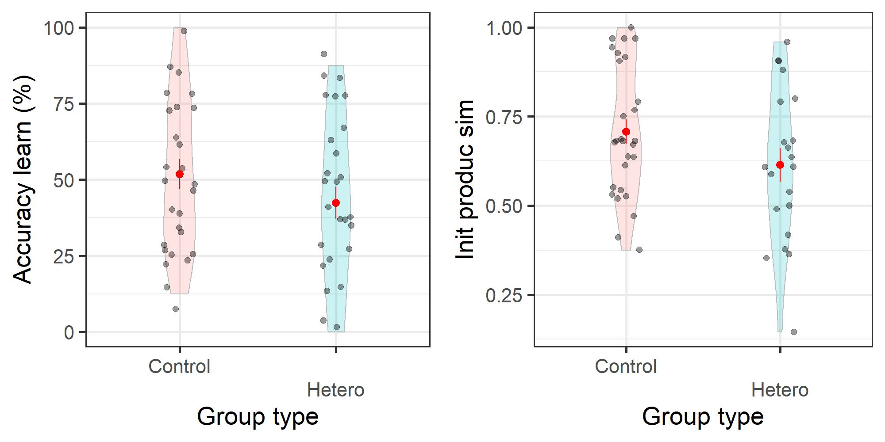
We check whether the difference of learning is statistically different. This is not an hypothesis, just a sanity check that our two group types are similar.
With accuracy learning:
Linear mixed model fit by REML. t-tests use Satterthwaite's method [
lmerModLmerTest]
Formula: mean_acc ~ GroupType + (1 | GroupID)
Data: df_agg_acc
REML criterion at convergence: 515.9
Scaled residuals:
Min 1Q Median 3Q Max
-1.57025 -0.73141 -0.06612 0.85951 1.78513
Random effects:
Groups Name Variance Std.Dev.
GroupID (Intercept) 0.0 0.00
Residual 729.5 27.01
Number of obs: 56, groups: GroupID, 14
Fixed effects:
Estimate Std. Error df t value Pr(>|t|)
(Intercept) 51.786 5.104 54.000 10.146 4.09e-14 ***
GroupTypeHetero -9.375 7.218 54.000 -1.299 0.2
---
Signif. codes: 0 '***' 0.001 '**' 0.01 '*' 0.05 '.' 0.1 ' ' 1
Correlation of Fixed Effects:
(Intr)
GroupTypHtr -0.707
optimizer (nloptwrap) convergence code: 0 (OK)
boundary (singular) fit: see help('isSingular')With initial production similarity:
Linear mixed model fit by REML. t-tests use Satterthwaite's method [
lmerModLmerTest]
Formula: mean_lev_dis ~ GroupType + (1 | GroupID)
Data: df_agg_dist2
REML criterion at convergence: -12.7
Scaled residuals:
Min 1Q Median 3Q Max
-2.4310 -0.7422 -0.1275 0.9897 1.6394
Random effects:
Groups Name Variance Std.Dev.
GroupID (Intercept) 0.00000 0.0000
Residual 0.04087 0.2022
Number of obs: 56, groups: GroupID, 14
Fixed effects:
Estimate Std. Error df t value Pr(>|t|)
(Intercept) 0.70704 0.03821 54.00000 18.506 <2e-16 ***
GroupTypeHetero -0.06973 0.05403 54.00000 -1.291 0.202
---
Signif. codes: 0 '***' 0.001 '**' 0.01 '*' 0.05 '.' 0.1 ' ' 1
Correlation of Fixed Effects:
(Intr)
GroupTypHtr -0.707
optimizer (nloptwrap) convergence code: 0 (OK)
boundary (singular) fit: see help('isSingular')-> The learning difference between the two groups is not significant
Looking at each shape:
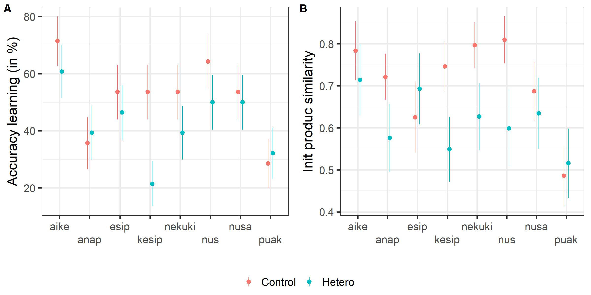
Participants’ characteristics
When building t-tests comparing each of these characteristics for the groups, we obtain the following p-values (please note that we used a chisq test for gender):
- For prosociality: 0.66
- For working memory: 0.55
- For cognitive flexibility: 0.81
- For dictator game: 1
- For age: 0.41
- For gender: 0.77
- For accuracy learning: 0.2
- For distance to initial words: 0.02
None of these values are significant, except for the distance to initial words. This can be easily explained given that the method we used to measure the initial production similarities is different for biased and unbiased participants. Thus, if we remove the biased participants, this p-value is not-significant anymore: 0.3.
Strategy
In this part, we only at the patterns observed in the heterogenous groups.
What are the strategies used by the biased participant to produce the initial labels before communicating? In this table, we count the number of time each biased participant has performed:
removal means that the biased participant remembered the label, and decided to remove the biased letter
switch means that the biased participant remembered the label, and decided to switch the biased letter with another unbiased letter
forgot means that the biased participant has forgot the initial label
| removal | forgot | switch | |
|---|---|---|---|
| Group1 | 0 | 1 | 5 |
| Group2 | 0 | 0 | 6 |
| Group3 | 4 | 2 | 0 |
| Group4 | 5 | 1 | 0 |
| Group5 | 5 | 1 | 0 |
| Group6 | 0 | 4 | 2 |
| Group7 | 0 | 6 | 0 |
Please note that these tables were filled manually.
Then, we also look at the pattern presented by the biased participant after communicating. How did this biased participant produce the label? Did this participant:
removal: used the initial label, but removed the biased letter
switch: used the initial label, but switched the biased letter with another unbiased letter (please note that in the case of “nekuki” label, we consider as “switch” things like “nepupi” or “nepipi”; it is not exactly the same word so it should be considered in the “new” column, but we think that the strategy is actually a switch (+ a weak forgot))
new: adopted a new label
special: here to condition where the participant has removed the biased letter, but has also added a letter at the end of the word. Then, the word was identifiable by the other members of the groups by the addition of this final letter (for example, esipp, and other participants produced esippp, sesss, sessss).
| removal | new | switch | special | |
|---|---|---|---|---|
| Group1 | 0 | 1 | 5 | 0 |
| Group2 | 0 | 6 | 0 | 0 |
| Group3 | 5 | 0 | 1 | 0 |
| Group4 | 0 | 2 | 4 | 0 |
| Group5 | 3 | 1 | 1 | 1 |
| Group6 | 1 | 3 | 2 | 0 |
| Group7 | 0 | 4 | 2 | 0 |
These tables concerned only the biased participant. Then, we can also look at the productions of the unbiased participants after they communicated (during the final testing) to look at their adaptative strategy. Please note that we do not look here at the labels that does not feature biased letters (nus and esip), only the 6 other that feature at least one biased letter. Here are the following possible options:
SameBiased_Removed: used the same label as the biased participant, in the case where the biased participant has removed a biased letter
SameBiased_Removed: used the same label as the biased participant, in the case where the biased participant has switched a biased letter with another unbiased letter
SameBiased_New: used the same label as the biased participant, in the case where the biased participant has created a new label
InitialLabel: used the initial label, even if the biased participant cannot use it the same way
DiffBiased_Adapt: use a different label as the biased participant, however this new label does not feature biased letter
DiffBiased_ABitAdapt: use a different label as the biased participant, this new label features slightly less biased letters than the original label (namely, instead of 2 biased letters, there is only one biased letter)
DiffBiased_NonAdapt: use a different label as the biased participant (which is also not the initial label), and that feature biased letters
| SameBiased_Removed | SameBiased_Switch | SameBiased_New | InitialLabel | DiffBiased_Adapt | DiffBiased_ABitAdapt | DiffBiased_NonAdapt | |
|---|---|---|---|---|---|---|---|
| Group1 | 0 | 0 | 0 | 2 | 2 | 5 | 9 |
| Group2 | 0 | 0 | 0 | 14 | 0 | 3 | 2 |
| Group3 | 0 | 0 | 0 | 10 | 2 | 3 | 3 |
| Group4 | 0 | 1 | 0 | 7 | 4 | 2 | 4 |
| Group5 | 3 | 0 | 0 | 3 | 7 | 2 | 3 |
| Group6 | 0 | 0 | 0 | 11 | 0 | 2 | 5 |
| Group7 | 0 | 0 | 0 | 6 | 6 | 2 | 4 |
When adapating, there are three main types of strategy used by the unbiased participants to adapt to the biased participants:
either they use the same word as the biased participant (it has happened 4 times out of the 6 words containing a biased letter and the 21 unbiased participants -> total of 126 occurences).
either they use a new label, not used by the biased participants, but that does not feature any biased letters: 21 or that does feature less biased letters than the original label: 19
If they do not adapt, either by using the initial label that contains as many biased letters as the original label (or more): 83
Summary results
performance of learning (both using accuracy index and distance to initial learning) are similar between control and heterogenous groups
some words are easier to remember compared to other (such as aike or nus)
the participants characteristics are similar between control and heterogenous groups (in average, they have approximately the same age, but also personal characteristics such as working memory, cognitive flexibility…)
in order to compensate with their difference, biased participants either labels either switch the biased letter with another letter. After communicating, they also come up with new words
unbiased participants adapt mostly by using another label which does not feature any biased letter (or less), and sometimes they adapt by copying the label used by the biased participant
1 - How heterogeneity may affect language evolution
Communicative success
Here, we examine the level of communicative success in interactions, specifically distinguishing between successful (success=1) and unsuccessful (success= 0) interaction in pairs. Please note that the variables Round2 here is the reverse order of Round (so that Round 9 becomes Round 0).
We look at the evolution of communicative success for each group:
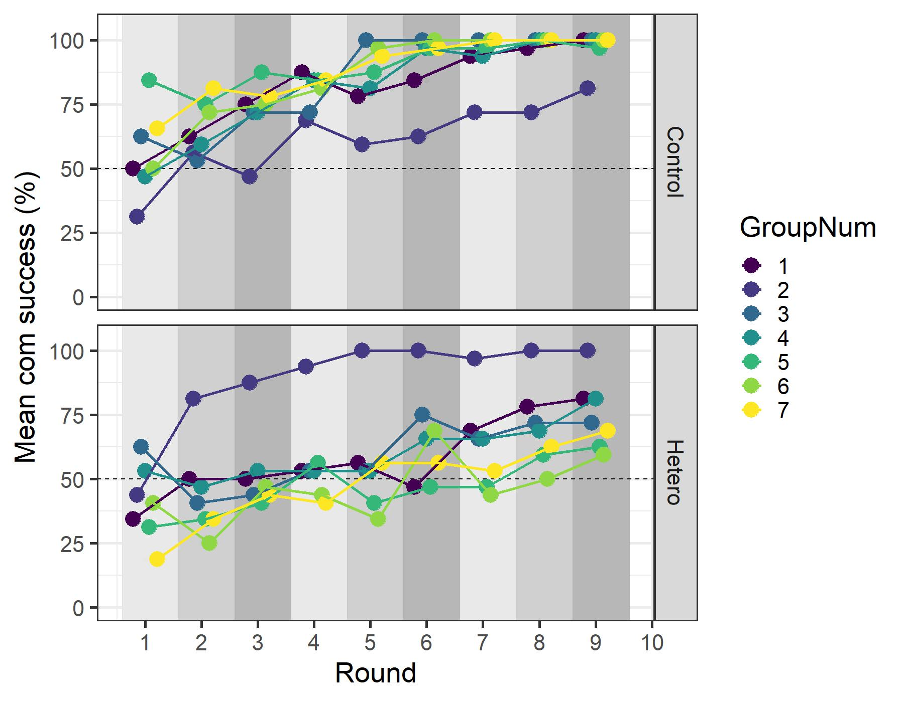
We can see that the communicative success of group 2 in the heterogeneous group is particularly high.
Let’s look at the aggregated performance for each group type:
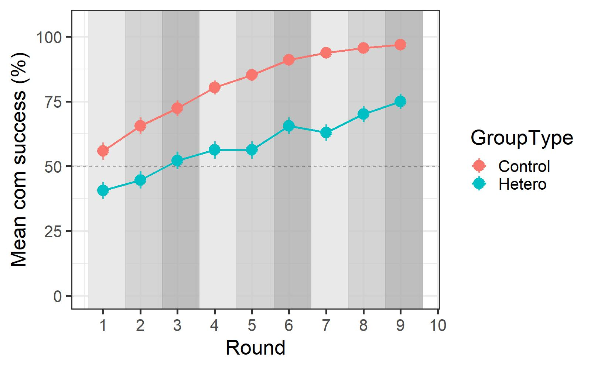
These plots raise two questions:
Is there a significant improvement of communicative success with time?
Is there a significant difference of communicative success between heterogeneous and control groups?
To investigate these questions, we build a linear mixed-effect models using the group type (hetero versus control) and the round as fixed effect. We use the aggregated data by pair, and we control for the random effect of Group Number.
Linear mixed model fit by REML. t-tests use Satterthwaite's method [
lmerModLmerTest]
Formula: mean_acc ~ GroupType * Round2 + (1 | GroupID)
Data: df_agg
REML criterion at convergence: 2082.6
Scaled residuals:
Min 1Q Median 3Q Max
-3.3675 -0.5828 -0.0625 0.7277 3.4084
Random effects:
Groups Name Variance Std.Dev.
GroupID (Intercept) 149.1 12.21
Residual 208.4 14.43
Number of obs: 252, groups: GroupID, 14
Fixed effects:
Estimate Std. Error df t value Pr(>|t|)
(Intercept) 102.3512 5.1882 16.4845 19.728 6.75e-13 ***
GroupTypeHetero -27.8571 7.3373 16.4845 -3.797 0.00151 **
Round2 -5.1265 0.4980 236.0000 -10.293 < 2e-16 ***
GroupTypeHetero:Round2 1.0491 0.7043 236.0000 1.489 0.13770
---
Signif. codes: 0 '***' 0.001 '**' 0.01 '*' 0.05 '.' 0.1 ' ' 1
Correlation of Fixed Effects:
(Intr) GrpTyH Round2
GroupTypHtr -0.707
Round2 -0.384 0.272
GrpTypHt:R2 0.272 -0.384 -0.707There is a significant variation in performance within each condition (control and heterogenous), with lower performance observed in the heterogenous groups. Notably, one group (group 2) had a very high performance. Furthermore, communicative success is significantly improving with time for both groups, but no interaction effect between group type and time is present.
From this plot, it is evident that the average communicative success is lower in heterogeneous groups compared to control groups. However, it could be due to the fact that heterogeneous groups include interactions with a biased participants. Thus, it is interesting to split the heterogeneous groups into two categories:
Hetero_biased (pairs in the heterogeneous groups that contain the biased participants: 1-2, 1-3, 1-4)
Hetero_nonbiased (pairs in the heterogeneous groups that does not contain the biased participant: 2-3, 2-4, 3-4).
This could lead to two different scenarios:
Hetero_nonbiased has high communicative success similarly to control groups, because these pairs do not include the biased participants ;
The confusion introduced by the biased participant spread to all participants, and the performance of hetero_unbiased is still lower than for control groups.
The plot suggests that hypothesis 2 is supported: the presence of the biased participant has introduced confusion within the heterogeneous group, leading to a decrease in the communicative success in all types of pairs. However, in general, the pair with the biased individual achieves a lower accuracy score (in the heterogenous group). We used a mixed-effect model to see if this is statistically significant:
Linear mixed model fit by REML. t-tests use Satterthwaite's method [
lmerModLmerTest]
Formula: mean_acc ~ type * Round2 + (1 | GroupID)
Data: df_agg
REML criterion at convergence: 2060.2
Scaled residuals:
Min 1Q Median 3Q Max
-3.4762 -0.6021 -0.0308 0.7018 3.1542
Random effects:
Groups Name Variance Std.Dev.
GroupID (Intercept) 149.8 12.24
Residual 195.5 13.98
Number of obs: 252, groups: GroupID, 14
Fixed effects:
Estimate Std. Error df t value Pr(>|t|)
(Intercept) 102.3512 5.1646 16.1891 19.818 8.84e-13
typeHetero With Biased -32.8274 7.6565 19.4992 -4.288 0.000378
typeHetero Without Biased -22.8869 7.6565 19.4992 -2.989 0.007391
Round2 -5.1265 0.4825 234.0000 -10.626 < 2e-16
typeHetero With Biased:Round2 0.9896 0.8356 234.0000 1.184 0.237530
typeHetero Without Biased:Round2 1.1086 0.8356 234.0000 1.327 0.185909
(Intercept) ***
typeHetero With Biased ***
typeHetero Without Biased **
Round2 ***
typeHetero With Biased:Round2
typeHetero Without Biased:Round2
---
Signif. codes: 0 '***' 0.001 '**' 0.01 '*' 0.05 '.' 0.1 ' ' 1
Correlation of Fixed Effects:
(Intr) typHtrWthBs typHtrWthtB Round2 typeHtrWthBsd:Rnd2
typHtrWthBs -0.675
typHtrWthtB -0.675 0.820
Round2 -0.374 0.252 0.252
typeHtrWthBsd:Rnd2 0.216 -0.437 -0.146 -0.577
typHtrWthtBsd:Rnd2 0.216 -0.146 -0.437 -0.577 0.333 Let’s just compare the pair with the biased participant and the pairs without (please note that pairs with the biased participants are considered to be the pairs with participant 1: so in the control groups, these pairs do not really include a biased participant, it is just in order to have an easy nice way of plotting):
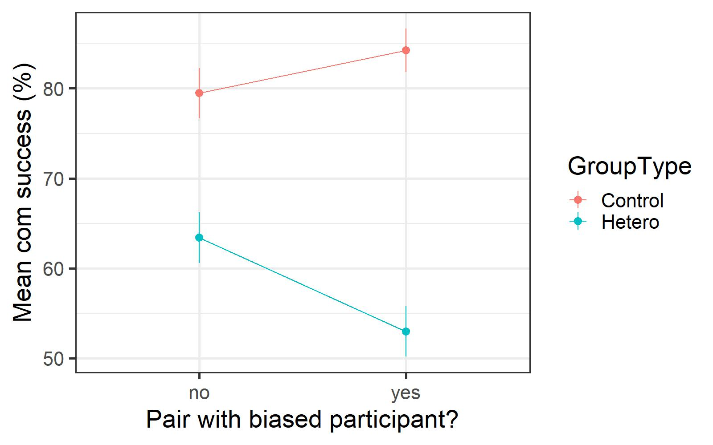
Linear mixed model fit by REML. t-tests use Satterthwaite's method [
lmerModLmerTest]
Formula: mean_acc ~ GroupType * have_biased + (1 | GroupID)
Data: df_agg
REML criterion at convergence: 2194.1
Scaled residuals:
Min 1Q Median 3Q Max
-3.6009 -0.6198 0.1994 0.7254 2.5621
Random effects:
Groups Name Variance Std.Dev.
GroupID (Intercept) 141.6 11.90
Residual 343.6 18.54
Number of obs: 252, groups: GroupID, 14
Fixed effects:
Estimate Std. Error df t value Pr(>|t|)
(Intercept) 79.464 5.067 15.010 15.682 1.02e-10 ***
GroupTypeHetero -16.071 7.166 15.010 -2.243 0.04044 *
have_biasedyes 4.762 3.303 236.000 1.442 0.15066
GroupTypeHetero:have_biasedyes -15.179 4.671 236.000 -3.250 0.00132 **
---
Signif. codes: 0 '***' 0.001 '**' 0.01 '*' 0.05 '.' 0.1 ' ' 1
Correlation of Fixed Effects:
(Intr) GrpTyH hv_bsd
GroupTypHtr -0.707
have_bisdys -0.326 0.230
GrpTypHtr:_ 0.230 -0.326 -0.707Summary results:
Communicative success improves with time (for both groups)
Communicative success is higher in control groups
In heterogeneous groups, communicative success is higher in pairs that do not contain the unbiased individuals. However, the communicative of this type of pairs is still lower than the one in control groups, which suggest that introducing a biased participant has spread some confusion in the whole group.
Evolution of production similarity
This analysis helps us gain insight into our data. We want to know if participants eventually adopt the initial labels, even if they initially didn’t remember them. To find out, we calculate the average Levenshtein distance between participants’ productions and the initial labels at each round.
There is subtleties: in biased agents, we manually computed the initial distance to the initial words. We applied the following algorithm:
if the shape is “esip” or “nus”: compute the normalized levenshtein distance
for the other shapes:
if the participant seems to have completely forgotten the word, or used a label for another image, we remove the biased letters from the shape and compute the normalized levenshtein distance. For example, if the shape is “puak” and the participants produced “esip”, we compute the normalized levenshtein distance between “puak” and “esip”
if the participants seems to have remember the word (it does not have to be the exact same word, but something similar), we replace or omitted the biased letters using the same strategy as the participant, and compute the normalized levenshtein distance between the two words. For example: if the shape is “nusa” and the participant produced “nusi”, we compute the normalized levenshtein distance between “nusi” and “nusi”. If the participants produced “nasi”, we computed the normalized levenshtein distance between “nasi” and “nusi”.
Why did we do this manually? When applying an automatic algorithm (that replace the word produced by the biased participants by a similar version of replacement or letter switch) For the unbiased participants, we just compute the normalized levenshtein distance between their production and the image name.
We look at the evolution of production similarity for each shape:
We observe that certain shapes are more effectively remembered than others. For instance, “aike” and “nus” are often well-remembered, while “puak” tends to be frequently forgotten.
This plot also reveals that individuals in the control group eventually converge on the initial labels, even if they initially forget it. However, in the heterogenous group, this convergence does not occur. Participants’ productions tend to become slightly closer to the initial labels, but at the end, the words still remain quite different, even for words that did not contain a biased letter!
We look at the same plot aggregated by group type:
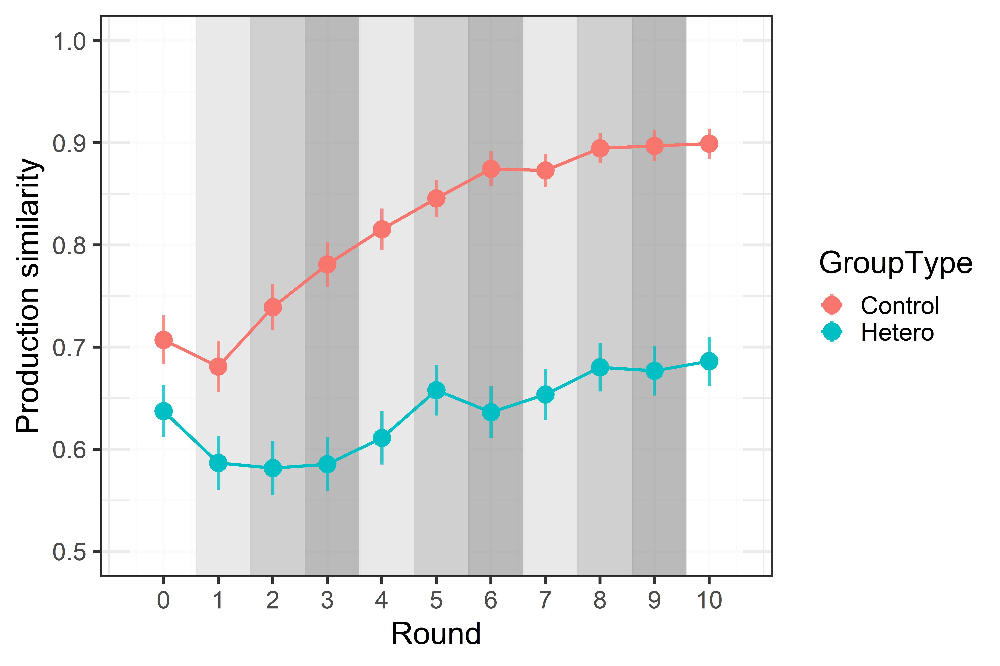
Linear mixed model fit by REML. t-tests use Satterthwaite's method [
lmerModLmerTest]
Formula: mean_lev_dis ~ GroupType * Round2 + (1 | GroupID)
Data: df_agg
REML criterion at convergence: -610.4
Scaled residuals:
Min 1Q Median 3Q Max
-4.2097 -0.5510 0.1136 0.6540 3.3992
Random effects:
Groups Name Variance Std.Dev.
GroupID (Intercept) 0.01252 0.1119
Residual 0.01932 0.1390
Number of obs: 616, groups: GroupID, 14
Fixed effects:
Estimate Std. Error df t value Pr(>|t|)
(Intercept) 0.934176 0.044806 14.117569 20.849 5.26e-12 ***
GroupTypeHetero -0.250145 0.063366 14.117569 -3.948 0.001437 **
Round2 -0.023053 0.002504 600.000000 -9.205 < 2e-16 ***
GroupTypeHetero:Round2 0.013383 0.003542 600.000000 3.778 0.000174 ***
---
Signif. codes: 0 '***' 0.001 '**' 0.01 '*' 0.05 '.' 0.1 ' ' 1
Correlation of Fixed Effects:
(Intr) GrpTyH Round2
GroupTypHtr -0.707
Round2 -0.279 0.198
GrpTypHt:R2 0.198 -0.279 -0.707Now, we split heterogenous condition in two: participants in heterogenous groups in pairs with (hetero_biased) and without (hetero_unbiased) the biased participant, similarly with previous plots.
Linear mixed model fit by REML. t-tests use Satterthwaite's method [
lmerModLmerTest]
Formula: mean_lev_dis ~ Condition * Round2 + (1 | GroupID)
Data: df_agg
REML criterion at convergence: -343.2
Scaled residuals:
Min 1Q Median 3Q Max
-3.7558 -0.5769 0.0365 0.5231 4.2734
Random effects:
Groups Name Variance Std.Dev.
GroupID (Intercept) 0.014826 0.12176
Residual 0.006049 0.07778
Number of obs: 189, groups: GroupID, 14
Fixed effects:
Estimate Std. Error df t value
(Intercept) 0.953641 0.050735 16.688851 18.797
ConditionHetero With Biased -0.201591 0.071750 16.688851 -2.810
ConditionHetero Without Biased -0.273413 0.071750 16.688851 -3.811
Round2 -0.026245 0.003795 171.105080 -6.915
ConditionHetero With Biased:Round2 0.013918 0.005367 171.105080 2.593
ConditionHetero Without Biased:Round2 0.012143 0.005367 171.105080 2.262
Pr(>|t|)
(Intercept) 1.16e-12 ***
ConditionHetero With Biased 0.01222 *
ConditionHetero Without Biased 0.00144 **
Round2 8.90e-11 ***
ConditionHetero With Biased:Round2 0.01033 *
ConditionHetero Without Biased:Round2 0.02493 *
---
Signif. codes: 0 '***' 0.001 '**' 0.01 '*' 0.05 '.' 0.1 ' ' 1
Correlation of Fixed Effects:
(Intr) CndtnHtrWthBs CndtnHtrWthtB Round2
CndtnHtrWthBs -0.707
CndtnHtrWthtB -0.707 0.911
Round2 -0.374 0.264 0.264
CondtnHtrWthBsd:Rnd2 0.264 -0.374 -0.187 -0.707
CndtnHtrWthtBsd:Rnd2 0.264 -0.187 -0.374 -0.707
CondtnHtrWthBsd:Rnd2
CndtnHtrWthBs
CndtnHtrWthtB
Round2
CondtnHtrWthBsd:Rnd2
CndtnHtrWthtBsd:Rnd2 0.500 The observable difference between the biased and unbiased participants in the heterogeneous groups could be attributed to two factors. First, there might genuinely be a difference, and by chance, biased participants may have remembered the initial labels better than unbiased participants. Alternatively, it is possible that the method we used to measure production similarity in biased participants has inherent flaws, and the algorithm may be, in a sense, more favorable to biased participants.
Convergence
In this part, we look at the convergence between all words produced in a round. As a reminder, each round, each participant produce one word for each label. So each round, there are 4 word productions for each labels : convergence will be high if these words are similar (such as kesip, kesup, kesip and kesip) but convergence will be low if these words are very different from each other (for example, kesip, onup, asip and keku).
Convergence is computed the following way:
Calculate the normalized Levenshtein distance between all pairs of words within the set of four words.
Find the average of these distances to obtain a single numerical value for each Round, each Shape, and each Group.
Take the complement of this value, so that the measure of convergence increases when the words are more similar, rather than the opposite.
In other words, convergence = 1 - (mean(dis(SetWords))) where dis(SetWords) is the pairwaise normalized Levenhstein distance between all words in SetWords.
The plot below includes the production of all participants, including the biased one:
We look at the same plot aggregated by group type:
First, we look at the convergence with all participants:
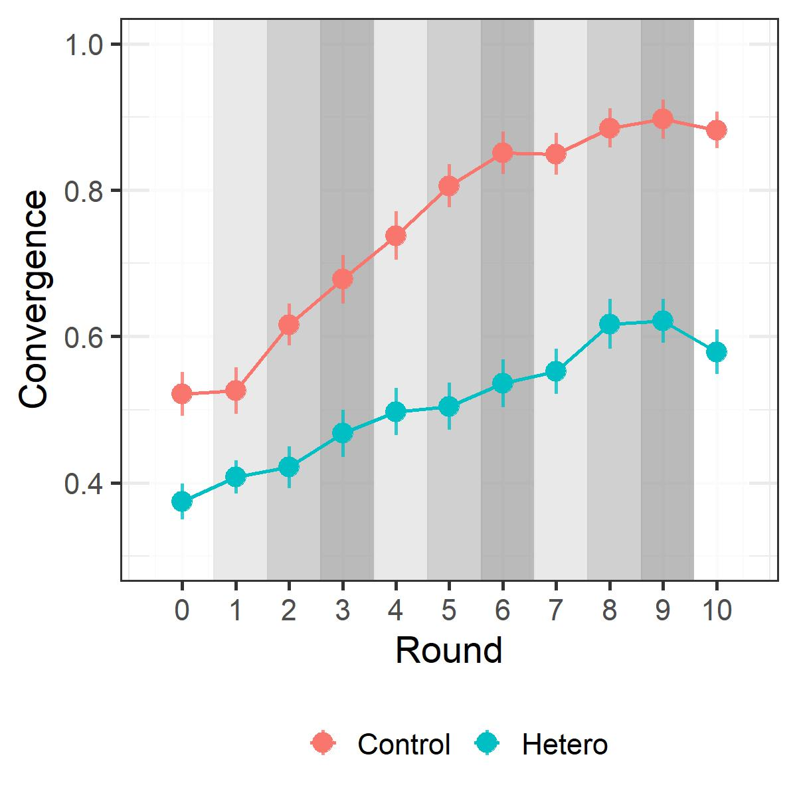
Call:
lm(formula = All ~ GroupType * Round2, data = df_agg)
Residuals:
Min 1Q Median 3Q Max
-0.276091 -0.072071 0.002382 0.065015 0.306850
Coefficients:
Estimate Std. Error t value Pr(>|t|)
(Intercept) 0.956567 0.025264 37.863 < 2e-16 ***
GroupTypeHetero -0.328186 0.035729 -9.185 3.12e-16 ***
Round2 -0.041340 0.004270 -9.681 < 2e-16 ***
GroupTypeHetero:Round2 0.017065 0.006039 2.826 0.00536 **
---
Signif. codes: 0 '***' 0.001 '**' 0.01 '*' 0.05 '.' 0.1 ' ' 1
Residual standard error: 0.1185 on 150 degrees of freedom
Multiple R-squared: 0.6573, Adjusted R-squared: 0.6505
F-statistic: 95.91 on 3 and 150 DF, p-value: < 2.2e-16Then, we look at:
- “Hetero With Biased”: convergence in groups that include the biased participant (what was computed before; 4 data)
- “Hetero Without Biased”: convergence in groups that does not inlude the biased participant (3 data)
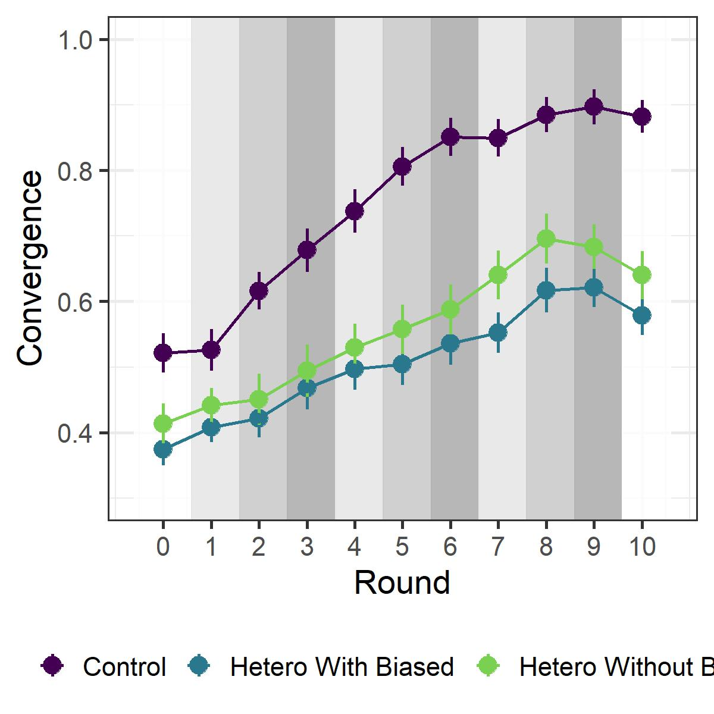
Call:
lm(formula = mean_lev_dist ~ TypeGroup * Round, data = df_agg)
Residuals:
Min 1Q Median 3Q Max
-0.27609 -0.07629 -0.00465 0.06187 0.37426
Coefficients:
Estimate Std. Error t value Pr(>|t|)
(Intercept) 0.543170 0.027253 19.931 < 2e-16 ***
TypeGroupHetero With Biased -0.157535 0.038541 -4.087 6.07e-05 ***
TypeGroupHetero Without Biased -0.130469 0.038541 -3.385 0.000839 ***
Round 0.041340 0.004607 8.974 < 2e-16 ***
TypeGroupHetero With Biased:Round -0.017065 0.006515 -2.620 0.009405 **
TypeGroupHetero Without Biased:Round -0.012387 0.006515 -1.901 0.058532 .
---
Signif. codes: 0 '***' 0.001 '**' 0.01 '*' 0.05 '.' 0.1 ' ' 1
Residual standard error: 0.1278 on 225 degrees of freedom
Multiple R-squared: 0.5735, Adjusted R-squared: 0.5641
F-statistic: 60.52 on 5 and 225 DF, p-value: < 2.2e-16Stability
Stability is a measure of the levenstein distances between all pairs of words from rounds n and n-1
First, we look at the evolution of stability for each shape.
To better understand how the function works, let’s take an example for the shape kesip:
- At round 7 participants produced puise, kesip, esip, epi
- At round 8 participants produced puie, suki, kesip, kesip
Stability is computed by computing the levenshtein distance between all pairs of words (puise and puie, then puise and suki, and so on). In this case stability between round 7 and 8 for the shape kesip is equal to 0.59.
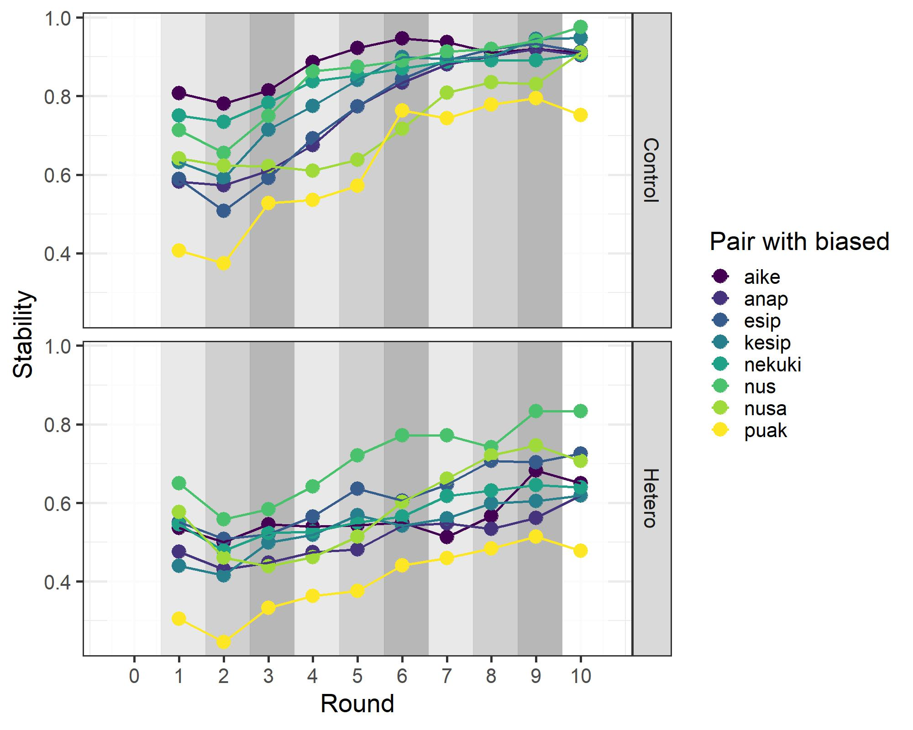
We look at the same type of data, except that it is aggregated by shape.
2 - Group-adaptation to the biased participants
Per group
For all rounds
Here, we calculate the frequency of biased and unbiased letters. For each round, we determine the total frequency of “k” and “a” out of all the letters used in that round to obtain the frequency of biased letters. Similarly, we compute the frequency of “p”, “n”, “s”, “e”, “i”, and “u” out of the total frequency of letters used in the round to obtain the frequency of unbiased letters. Since there are 6 unbiased letters and 2 biased letters, we divide the frequency of biased letters by 2 and the frequency of unbiased letters by 6.
Please note that the initial labels have slightly more biased letters than unbiased letters. The frequency of each letter in the initial labels (kesip, esip, nus, nusa, aike, puak, nekuki, anap) is:
a e i k n p s u
5 4 4 5 4 4 4 4 Thus, the initial frequency of each biased letter is of 29.41 %.
In all the following plots, we will represent these initial frequencies with a black dashed line.
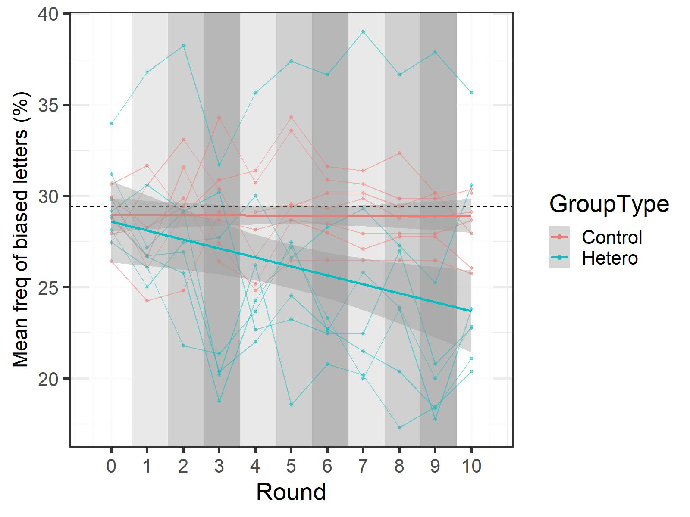
Let’s use a linear model to study if there is an effect of time and group type on the frequency of biased and unbiased letters.
We ran two types of models: one where we include the testing sessions (as Round 0 and Round 10), and one where we only look at the communication games. For both types of model, we run a model with Round as random slopes, and one simpler model only controlling for the random effect of group ID.
We use models including testing sessions (round 0 to 10):
Linear mixed model fit by REML. t-tests use Satterthwaite's method [
lmerModLmerTest]
Formula: Freq ~ Round2 * GroupType + (1 + RoundType | GroupID)
Data: df_agg
Control: lmerControl(optimizer = "bobyqa")
REML criterion at convergence: 745.8
Scaled residuals:
Min 1Q Median 3Q Max
-2.36761 -0.55888 0.05607 0.53689 2.44479
Random effects:
Groups Name Variance Std.Dev. Corr
GroupID (Intercept) 12.8883 3.5900
RoundTypeT2 0.1840 0.4289 0.02
RoundTypeT3 2.5881 1.6087 0.98 0.23
RoundTypeTTest 0.8408 0.9169 -0.56 0.82 -0.37
Residual 5.4675 2.3383
Number of obs: 154, groups: GroupID, 14
Fixed effects:
Estimate Std. Error df t value Pr(>|t|)
(Intercept) 29.06477 1.27383 19.08137 22.817 2.6e-15 ***
Round2 0.02505 0.08588 123.31236 0.292 0.770991
GroupTypeHetero -3.86540 1.80147 19.08137 -2.146 0.044973 *
Round2:GroupTypeHetero 0.45475 0.12145 123.31236 3.744 0.000276 ***
---
Signif. codes: 0 '***' 0.001 '**' 0.01 '*' 0.05 '.' 0.1 ' ' 1
Correlation of Fixed Effects:
(Intr) Round2 GrpTyH
Round2 -0.489
GroupTypHtr -0.707 0.345
Rnd2:GrpTyH 0.345 -0.707 -0.489
optimizer (bobyqa) convergence code: 0 (OK)
boundary (singular) fit: see help('isSingular')The model with round as a random slope does not converge. We can also control for the type of round: round 1, 3, and 6 involves the same types of pairs, as well as rounds 2, 4, and 7 and rounds 3,6,9.
Linear mixed model fit by REML. t-tests use Satterthwaite's method [
lmerModLmerTest]
Formula: Freq ~ Round2 * GroupType + (1 + RoundType | GroupID)
Data: df_agg
Control: lmerControl(optimizer = "bobyqa")
REML criterion at convergence: 745.8
Scaled residuals:
Min 1Q Median 3Q Max
-2.36761 -0.55888 0.05607 0.53689 2.44479
Random effects:
Groups Name Variance Std.Dev. Corr
GroupID (Intercept) 12.8883 3.5900
RoundTypeT2 0.1840 0.4289 0.02
RoundTypeT3 2.5881 1.6087 0.98 0.23
RoundTypeTTest 0.8408 0.9169 -0.56 0.82 -0.37
Residual 5.4675 2.3383
Number of obs: 154, groups: GroupID, 14
Fixed effects:
Estimate Std. Error df t value Pr(>|t|)
(Intercept) 29.06477 1.27383 19.08137 22.817 2.6e-15 ***
Round2 0.02505 0.08588 123.31236 0.292 0.770991
GroupTypeHetero -3.86540 1.80147 19.08137 -2.146 0.044973 *
Round2:GroupTypeHetero 0.45475 0.12145 123.31236 3.744 0.000276 ***
---
Signif. codes: 0 '***' 0.001 '**' 0.01 '*' 0.05 '.' 0.1 ' ' 1
Correlation of Fixed Effects:
(Intr) Round2 GrpTyH
Round2 -0.489
GroupTypHtr -0.707 0.345
Rnd2:GrpTyH 0.345 -0.707 -0.489
optimizer (bobyqa) convergence code: 0 (OK)
boundary (singular) fit: see help('isSingular')This model also does not converge.
Thus, we look only at a model which have group ID as a random factor.
Linear mixed model fit by REML. t-tests use Satterthwaite's method [
lmerModLmerTest]
Formula: Freq ~ Round2 * GroupType + (1 | GroupID)
Data: df_agg
REML criterion at convergence: 752.5
Scaled residuals:
Min 1Q Median 3Q Max
-2.49435 -0.52551 0.04991 0.54536 2.41927
Random effects:
Groups Name Variance Std.Dev.
GroupID (Intercept) 12.182 3.490
Residual 5.927 2.435
Number of obs: 154, groups: GroupID, 14
Fixed effects:
Estimate Std. Error df t value Pr(>|t|)
(Intercept) 28.82722 1.41762 14.66164 20.335 3.76e-12 ***
Round2 0.02786 0.08773 138.00000 0.318 0.751325
GroupTypeHetero -5.14135 2.00482 14.66164 -2.564 0.021861 *
Round2:GroupTypeHetero 0.46296 0.12407 138.00000 3.731 0.000277 ***
---
Signif. codes: 0 '***' 0.001 '**' 0.01 '*' 0.05 '.' 0.1 ' ' 1
Correlation of Fixed Effects:
(Intr) Round2 GrpTyH
Round2 -0.309
GroupTypHtr -0.707 0.219
Rnd2:GrpTyH 0.219 -0.707 -0.309The plot and model suggests:
There are more variation in heterogenous groups compared to control groups
In control groups, the proportion of biased and unbiased letters remain similar to the initial frequency of these letters
In heterogenous groups, the proportion of unbiased letters slightly increase with time, while the proportion of biased letters slightly decrease with time.
Let’s look at the same plot, but using aggregated values for all groups:
For Testing
The previous plot focused on the evolution of the frequency of biased and unbiased letters across all rounds (0 to 10). Now, we will focus solely on the Round 0 and the Round 10, namely, the initial (FirstTest, after the passive exposure) and the final testing (LastTest, after the communication game).
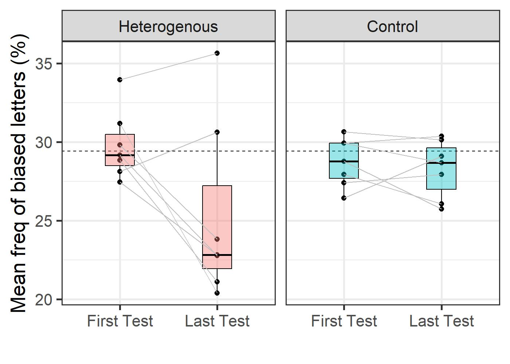
Linear mixed model fit by REML. t-tests use Satterthwaite's method [
lmerModLmerTest]
Formula: Freq ~ TypeTest * GroupType + (1 | GroupID)
Data: df_agg
REML criterion at convergence: 131.4
Scaled residuals:
Min 1Q Median 3Q Max
-1.51545 -0.49364 0.07462 0.23892 2.43984
Random effects:
Groups Name Variance Std.Dev.
GroupID (Intercept) 4.117 2.029
Residual 6.806 2.609
Number of obs: 28, groups: GroupID, 14
Fixed effects:
Estimate Std. Error df t value Pr(>|t|)
(Intercept) 29.792 1.249 21.014 23.850 < 2e-16
TypeTestLast Test -4.484 1.394 12.000 -3.216 0.00741
GroupTypeControl -1.084 1.767 21.014 -0.613 0.54616
TypeTestLast Test:GroupTypeControl 4.234 1.972 12.000 2.147 0.05291
(Intercept) ***
TypeTestLast Test **
GroupTypeControl
TypeTestLast Test:GroupTypeControl .
---
Signif. codes: 0 '***' 0.001 '**' 0.01 '*' 0.05 '.' 0.1 ' ' 1
Correlation of Fixed Effects:
(Intr) TypTLT GrpTyC
TypTstLstTs -0.558
GrpTypCntrl -0.707 0.395
TypTsLT:GTC 0.395 -0.707 -0.558Boostrapping
Bootstrapping is a resampling technique used in statistics to estimate the uncertainty associated with a sample statistic. It involves repeatedly drawing random samples with replacement from the original data set. By creating multiple bootstrap samples, the method allows for the estimation of sampling variability, constructing confidence intervals, and assessing the statistical significance of results. Bootstrapping is particularly useful when the sample size is small or when the underlying data distribution is unknown or non-normal, as it provides a robust and flexible approach for inference.
# A tibble: 12 × 6
term estimate lower upper type level
<chr> <dbl> <dbl> <dbl> <chr> <dbl>
1 (Intercept) 29.8 27.3 32.2 norm 0.95
2 GroupTypeControl -1.08 -4.80 2.05 norm 0.95
3 TypeTestLast Test -4.48 -7.78 -1.32 norm 0.95
4 GroupTypeControl:TypeTestLast Test 4.23 -0.144 9.01 norm 0.95
5 (Intercept) 29.8 27.3 32.4 basic 0.95
6 GroupTypeControl -1.08 -4.59 1.92 basic 0.95
7 TypeTestLast Test -4.48 -7.29 -1.34 basic 0.95
8 GroupTypeControl:TypeTestLast Test 4.23 0.175 8.41 basic 0.95
9 (Intercept) 29.8 27.2 32.3 perc 0.95
10 GroupTypeControl -1.08 -4.09 2.42 perc 0.95
11 TypeTestLast Test -4.48 -7.63 -1.68 perc 0.95
12 GroupTypeControl:TypeTestLast Test 4.23 0.0577 8.29 perc 0.95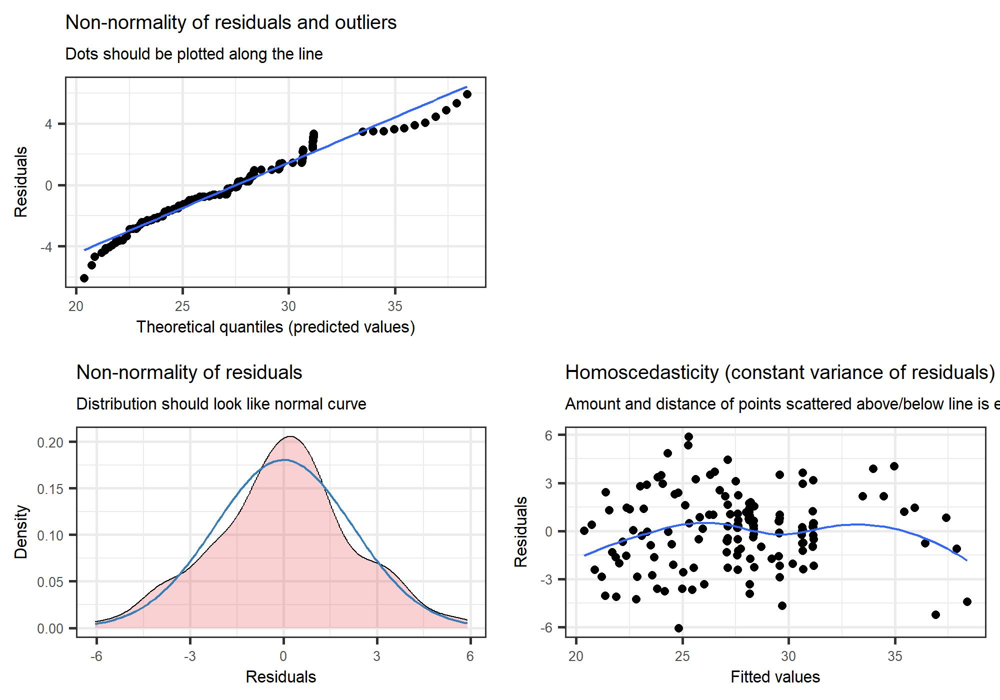
How to explain Group 2 and Group 6 performance?
Figure 18 also highlights two groups within the heterogenous group (Group 2 and Group 6) that deviate from this pattern. Our hypothesis is that these groups did not adapt to the biased participant because their participants remembered too well the initial labels, causing them to stick with those words. To further investigate, let’s examine the accuracy of the initial learning phase for all groups:
It appears that Group 2 and Group 6 (the groups that did not adapt to the biased participants) also exhibited higher learning accuracy. Let’s verify whether our hypothesis is encouraged by checking if these groups had nearly identical words at the end compared to the initial words.
For group 2:
Before communicating labels:
| PartID | aike | anap | esip | kesip | nekuki | nus | nusa | puak |
|---|---|---|---|---|---|---|---|---|
| 1 | eipe | unup | esip | nesip | nepupi | esu | nusu | puei |
| 2 | aike | upak | esip | kesip | nusa | nusa | nusa | puak |
| 3 | anap | anap | esip | kesip | nekuki | nus | nusa | puak |
| 4 | aike | kusap | esi | kesi | sup | nus | nuk | nuki |
After communicating labels:
| PartID | aike | anap | esip | kesip | nekuki | nus | nusa | puak |
|---|---|---|---|---|---|---|---|---|
| 1 | eipe | unup | esip | nesip | nepupi | nus | nusu | pue |
| 2 | aike | anap | pua | kesip | kukupa | nus | nusa | pua |
| 3 | aike | anap | esip | kesip | nekuki | nus | nusa | pua |
| 4 | aike | anap | esip | kesip | kukupa | nus | nusa | pua |
For Group 6:
Before communicating labels:
| PartID | nusa | nus | kesip | esip | puak | nekuki | anap | aike |
|---|---|---|---|---|---|---|---|---|
| 1 | esei | enep | nuis | senui | nus | nusi | nesupi | |
| 2 | aike | anap | esip | kesip | nekuki | nun | nusa | puak |
| 3 | aike | anap | esip | sekin | nekuki | sap | nusa | puak |
| 4 | peki | ani | sunak | nekaki | nusaki | nuk | nekaki | nusak |
After communicating labels:
| PartID | nusa | nus | kesip | esip | puak | nekuki | anap | aike |
|---|---|---|---|---|---|---|---|---|
| 1 | eipi | enep | epui | puise | pepupi | nuse | nus | epei |
| 2 | aike | anap | seki | kesip | nekuki | nan | nusa | puak |
| 3 | aike | anap | seki | esip | nekuki | nak | nusa | puak |
| 4 | kuap | ani | nekaki | epi | nesaki | suk | peike | kuap |
In order to look more at the relation between learning accuracy and adaptability, please refer to the part [3 - Adaptability] and subpart What do predict adaptation?
Now, we look at the evolution of the production similarity with the initial labels with time with a specific focus on these two groups:
This plot helps understand the non adaptability of group 2 - participants of this group converged on the initial labels. However, we do not know more about the performance of Group 6.
Per individual
For all rounds
This is the same plot as before, except that we plot here the results for each participant.
The model failed to converge when including Round as a random slope.
Linear mixed model fit by REML. t-tests use Satterthwaite's method [
lmerModLmerTest]
Formula: Freq ~ Round2 * GroupType + (1 + Round2 | GroupID/PartID_unique)
Data: df_agg
Control: lmerControl(optimizer = "bobyqa")
REML criterion at convergence: 2614
Scaled residuals:
Min 1Q Median 3Q Max
-3.7717 -0.4833 0.0219 0.4203 3.7341
Random effects:
Groups Name Variance Std.Dev. Corr
PartID_unique:GroupID (Intercept) 5.2935 2.3008
Round2 0.1639 0.4048 -0.47
GroupID (Intercept) 23.5931 4.8573
Round2 0.1005 0.3170 -1.00
Residual 12.6353 3.5546
Number of obs: 462, groups: PartID_unique:GroupID, 42; GroupID, 14
Fixed effects:
Estimate Std. Error df t value Pr(>|t|)
(Intercept) 28.81526 1.95293 12.00755 14.755 4.65e-09 ***
Round2 0.03122 0.16623 13.86415 0.188 0.8537
GroupTypeHetero -5.10221 2.76187 12.00755 -1.847 0.0895 .
Round2:GroupTypeHetero 0.44604 0.23509 13.86415 1.897 0.0788 .
---
Signif. codes: 0 '***' 0.001 '**' 0.01 '*' 0.05 '.' 0.1 ' ' 1
Correlation of Fixed Effects:
(Intr) Round2 GrpTyH
Round2 -0.826
GroupTypHtr -0.707 0.584
Rnd2:GrpTyH 0.584 -0.707 -0.826
optimizer (bobyqa) convergence code: 0 (OK)
boundary (singular) fit: see help('isSingular')Instead, we can control for the type of pairs in which participants are talking:
Linear mixed model fit by REML. t-tests use Satterthwaite's method [
lmerModLmerTest]
Formula: Freq ~ Round2 * GroupType + (1 + pairs | GroupID/PartID_unique)
Data: df_agg
REML criterion at convergence: 2608.9
Scaled residuals:
Min 1Q Median 3Q Max
-3.6416 -0.5005 -0.0045 0.5405 3.8582
Random effects:
Groups Name Variance Std.Dev. Corr
PartID_unique:GroupID (Intercept) 1.7318 1.316
pairs1_3 3.4605 1.860 -0.04
pairs1_4 0.7604 0.872 -0.36 0.95
pairs2_3 3.8575 1.964 -0.14 0.99 0.97
pairs2_4 5.7984 2.408 -0.16 0.99 0.98 1.00
pairs3_4 4.2532 2.062 0.00 1.00 0.93 0.99
pairsNone 1.2103 1.100 0.54 0.82 0.59 0.75
GroupID (Intercept) 11.0666 3.327
pairs1_3 2.0767 1.441 1.00
pairs1_4 4.7513 2.180 0.88 0.83
pairs2_3 2.5827 1.607 0.33 0.32 0.38
pairs2_4 7.5970 2.756 -0.46 -0.51 -0.09 0.54
pairs3_4 4.4862 2.118 -0.16 -0.20 0.10 0.83
pairsNone 4.2611 2.064 -0.73 -0.77 -0.43 0.32
Residual 12.4838 3.533
0.99
0.74 0.84
0.91
0.94 0.78
Number of obs: 462, groups: PartID_unique:GroupID, 42; GroupID, 14
Fixed effects:
Estimate Std. Error df t value Pr(>|t|)
(Intercept) 28.18552 1.09115 19.76111 25.831 < 2e-16 ***
Round2 0.04239 0.07396 359.61828 0.573 0.566928
GroupTypeHetero -2.53061 1.54311 19.76111 -1.640 0.116841
Round2:GroupTypeHetero 0.39123 0.10459 359.61833 3.741 0.000214 ***
---
Signif. codes: 0 '***' 0.001 '**' 0.01 '*' 0.05 '.' 0.1 ' ' 1
Correlation of Fixed Effects:
(Intr) Round2 GrpTyH
Round2 -0.390
GroupTypHtr -0.707 0.276
Rnd2:GrpTyH 0.276 -0.707 -0.390
optimizer (nloptwrap) convergence code: 0 (OK)
boundary (singular) fit: see help('isSingular')This model does not converge either. Thus, we keep only the model with Participant ID and group ID as random factors.
Linear mixed model fit by REML. t-tests use Satterthwaite's method [
lmerModLmerTest]
Formula: Freq ~ Round2 * GroupType + (1 | GroupID/PartID_unique)
Data: df_agg
REML criterion at convergence: 2658.3
Scaled residuals:
Min 1Q Median 3Q Max
-3.4857 -0.5514 0.0025 0.5205 4.1151
Random effects:
Groups Name Variance Std.Dev.
PartID_unique:GroupID (Intercept) 5.044 2.246
GroupID (Intercept) 10.443 3.231
Residual 15.313 3.913
Number of obs: 462, groups: PartID_unique:GroupID, 42; GroupID, 14
Fixed effects:
Estimate Std. Error df t value Pr(>|t|)
(Intercept) 28.81526 1.40143 14.31003 20.561 4.99e-12 ***
Round2 0.03122 0.08142 418.00006 0.383 0.701566
GroupTypeHetero -5.10221 1.98192 14.31003 -2.574 0.021756 *
Round2:GroupTypeHetero 0.44604 0.11514 418.00006 3.874 0.000124 ***
---
Signif. codes: 0 '***' 0.001 '**' 0.01 '*' 0.05 '.' 0.1 ' ' 1
Correlation of Fixed Effects:
(Intr) Round2 GrpTyH
Round2 -0.290
GroupTypHtr -0.707 0.205
Rnd2:GrpTyH 0.205 -0.707 -0.290For Testing
This plot is the same as before, except that we plot here the output for each participant.
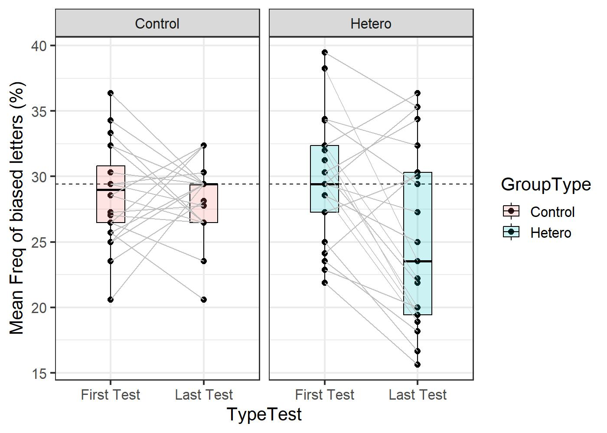
Linear mixed model fit by REML. t-tests use Satterthwaite's method [
lmerModLmerTest]
Formula: Freq ~ TypeTest * GroupType + (1 | GroupID/PartID_unique)
Data: df_freq
REML criterion at convergence: 553.6
Scaled residuals:
Min 1Q Median 3Q Max
-1.79806 -0.65303 -0.00725 0.63814 2.11781
Random effects:
Groups Name Variance Std.Dev.
PartID_unique:GroupID (Intercept) 4.131 2.033
GroupID (Intercept) 3.296 1.815
Residual 13.193 3.632
Number of obs: 98, groups: PartID_unique:GroupID, 49; GroupID, 14
Fixed effects:
Estimate Std. Error df t value Pr(>|t|)
(Intercept) 28.7550 1.0438 15.1128 27.548 2.47e-14
TypeTestLast Test -0.4778 0.9707 47.0000 -0.492 0.6249
GroupTypeHetero 1.0060 1.5444 18.1165 0.651 0.5230
TypeTestLast Test:GroupTypeHetero -3.9701 1.4828 47.0000 -2.677 0.0102
(Intercept) ***
TypeTestLast Test
GroupTypeHetero
TypeTestLast Test:GroupTypeHetero *
---
Signif. codes: 0 '***' 0.001 '**' 0.01 '*' 0.05 '.' 0.1 ' ' 1
Correlation of Fixed Effects:
(Intr) TypTLT GrpTyH
TypTstLstTs -0.465
GroupTypHtr -0.676 0.314
TypTsLT:GTH 0.304 -0.655 -0.480Summary: per group & per pair
Using violin plots and stadnard errors
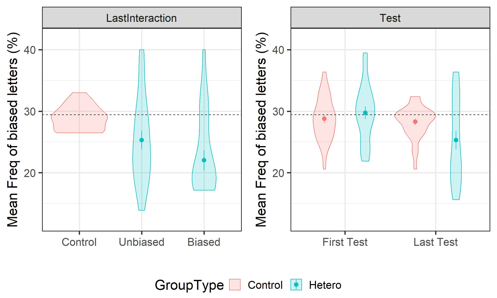
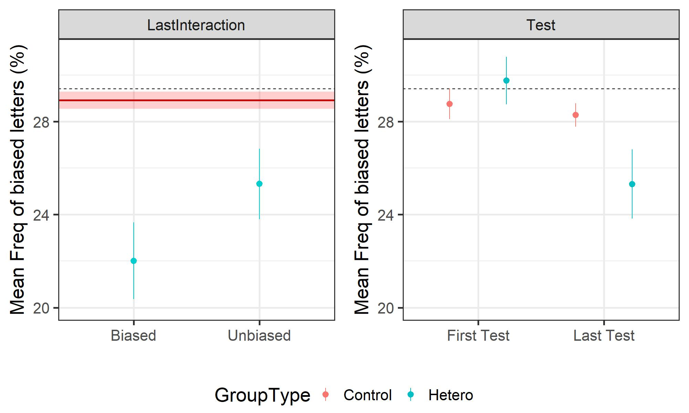
3 - Pair-level adaptation to the biased participant
We focus here on the pair-level: we compare the productions of the participants in the pair excluding the biased participants (pair between 2 - 3, 3 - 4, and 2 - 4), to the production used by pairs involving the biased participant (pair with 1 - 2, 1 - 3, and 1 - 4). Important note: the length of input between pair without and with the biased participant do not have the same length, as we do not look at the productions of Participant 1. For example, in Round 1, we compare the output of:
Pair without the biased participant (Hetero_unbiased): production of participant 3 and participant 4 -> 16 words in total
Pair involving the biased participant (Hetero_biased): production of participant 2 only (we did not look at the frequency of biased letter for participant 1 because this participant is unable to produce any of these letters) -> 8 words in total
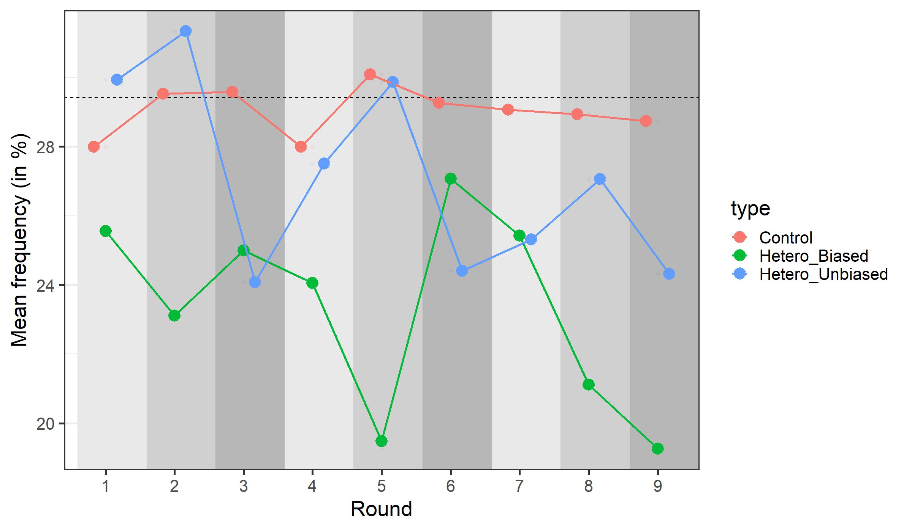
A very interesting observation appear: in Round 3, pairs with unbiased individuals use very few biased letters! This can be explained by the fact that these two unbiased participants have been paired with the biased participant in the rounds just before.
We merge these results per round, to have a look at the global picture:
We build two models: one in which the group type is a fixed effect (but please note that this introduces a bias, since in control groups, there is no “talk to bias” or “talk to unbias” - instead, it reflects whether participants 2, 3, and 4 talk to participant1 or not).
Linear mixed model fit by REML. t-tests use Satterthwaite's method [
lmerModLmerTest]
Formula: Freq ~ GroupType * TalkToBiased + (1 | GroupID/PartID_unique)
Data: df_agg
REML criterion at convergence: 309.5
Scaled residuals:
Min 1Q Median 3Q Max
-2.26916 -0.38120 -0.03873 0.32515 2.28763
Random effects:
Groups Name Variance Std.Dev.
PartID_unique:GroupID (Intercept) 1.013 1.006
GroupID (Intercept) 2.902 1.704
Residual 1.064 1.031
Number of obs: 84, groups: PartID_unique:GroupID, 42; GroupID, 14
Fixed effects:
Estimate Std. Error df t value Pr(>|t|)
(Intercept) 14.5818 0.7166 13.2669 20.350 2.16e-11
GroupTypeHetero -1.0773 1.0134 13.2669 -1.063 0.306723
TalkToBiasedYes -0.1710 0.3183 40.0000 -0.537 0.594076
GroupTypeHetero:TalkToBiasedYes -1.6846 0.4501 40.0000 -3.742 0.000573
(Intercept) ***
GroupTypeHetero
TalkToBiasedYes
GroupTypeHetero:TalkToBiasedYes ***
---
Signif. codes: 0 '***' 0.001 '**' 0.01 '*' 0.05 '.' 0.1 ' ' 1
Correlation of Fixed Effects:
(Intr) GrpTyH TlkTBY
GroupTypHtr -0.707
TalkToBsdYs -0.222 0.157
GrpTyH:TTBY 0.157 -0.222 -0.707Then, we also look only at heterogenous groups:
Linear mixed model fit by REML. t-tests use Satterthwaite's method [
lmerModLmerTest]
Formula: Freq ~ TalkToBiased + (1 | GroupID/PartID_unique)
Data: df_agg
REML criterion at convergence: 171.5
Scaled residuals:
Min 1Q Median 3Q Max
-1.91303 -0.32334 -0.08062 0.29827 1.78595
Random effects:
Groups Name Variance Std.Dev.
PartID_unique:GroupID (Intercept) 1.757 1.326
GroupID (Intercept) 5.415 2.327
Residual 1.470 1.212
Number of obs: 42, groups: PartID_unique:GroupID, 21; GroupID, 7
Fixed effects:
Estimate Std. Error df t value Pr(>|t|)
(Intercept) 13.5046 0.9630 6.4768 14.02 4.35e-06 ***
TalkToBiasedYes -1.8556 0.3741 20.0000 -4.96 7.54e-05 ***
---
Signif. codes: 0 '***' 0.001 '**' 0.01 '*' 0.05 '.' 0.1 ' ' 1
Correlation of Fixed Effects:
(Intr)
TalkToBsdYs -0.194We create an index for each participant: the difference in frequency of letter when this participant is talking to the Biased compared to when talking to the other. A high value in “yes” mean that the participant uses way less (biased or unbiased) letters when talking to the biased participant.
3bis - Adaptability
Measures
We compute three measures of adaptability based on the ratio of letter frequency:
Adapt1. The first one reflects, for each participant, the difference between the frequency of biased letter in the FirstTesting and the frequency of biased letter in the SecondTesting. A larger number indicates a greater decrease in the number of biased letters in the participants’ final vocabulary (so the participant adapted to the peculiarities of the biased participant). Conversely, a negative score for adaptability means that the person has increased the number of biased letters (so the participant did not adapt to the peculiarities of the biased participant).
Adapt2. The measure is very similar to the first one, except that here we do not look at the First and Second Testing, but at all interactions with the biased participants made from Round 1 to 9.
Adapt3. This measure is the most complex, and the most likely to efficiently represent adaptability. We arbitrarily created a score based on a decision tree, see image below:
Adapt4. This is similar to Adapt3, except that here, we look at the normalized distance between:
d1: the new item produced and the item the partner has said
d2: the new item produced and the last item produced by the participant.
Then, we computed the Adapt4 as 2*(1-d1) + d2 (see below)
We look at this only in heterogenous groups for Adapt1 and Adapt2, and for both groups (heterogeneous and control) in Adapt3.
Do these measures correlate with each other, and how are they distributed?
The correlation netween the measure for Adaptability 1 and 2 is quite low, while it should be higher.
Predictors
However, we will still try to observe how our different metrics (such as age, gender…: see Method) correlate with the adaptability scores. First, we look at the variable distribution.
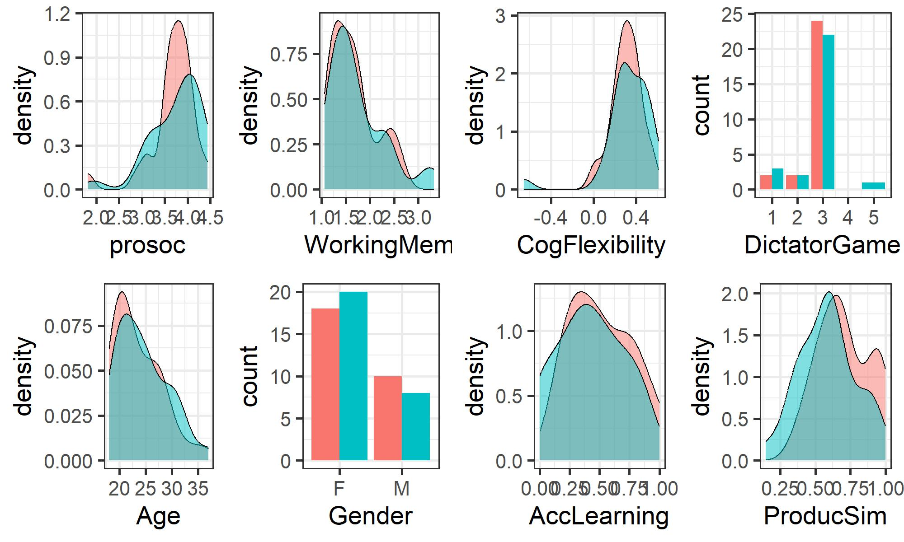
Just a reminder:
- the global working memory is the overall inverse efficiency (reaction time divided by accuracy) in the task-switching experiment, only in letters+numbers task: the higher, the worst the workig memory
- the cognitive flexibility is measured in the letters+numbers task in the task switching experiment. It is the normalized difference (by time) of the time needed to switch between two tasks and the time needed when performing the same task: the higher, the worst the cognitive flexibility
Let’s look at the correlations between the numerical variables:
What do predict adaptation?
We can look at all scores together:
But, in order to see more clearly (and also add the effect of gender, which we could not see in the plot above, we will have a closer look at each of our Adaptability measures.
We first look at the measure using the score of Adaptability1:
(please note that this variable only includes participants from heterogenous groups)
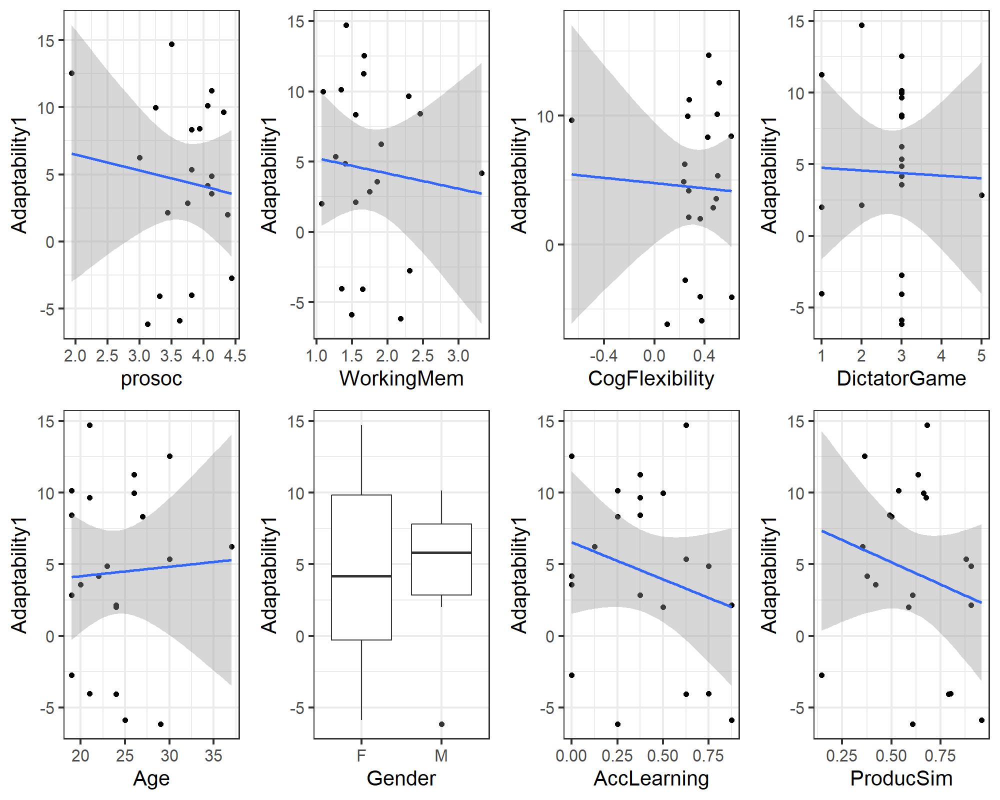
Model:
Linear mixed model fit by REML. t-tests use Satterthwaite's method [
lmerModLmerTest]
Formula: Adaptability1 ~ prosoc + WorkingMem + CogFlexibility + DictatorGame +
Age + Gender + AccLearning + DistInitWords + (1 | GroupNum)
Data: df_other2
REML criterion at convergence: 94.1
Scaled residuals:
Min 1Q Median 3Q Max
-1.19689 -0.50159 -0.08027 0.57271 0.91707
Random effects:
Groups Name Variance Std.Dev.
GroupNum (Intercept) 31.66 5.627
Residual 30.88 5.557
Number of obs: 21, groups: GroupNum, 7
Fixed effects:
Estimate Std. Error df t value Pr(>|t|)
(Intercept) 24.5288 27.2033 7.1591 0.902 0.397
prosoc -3.8259 4.4046 10.6155 -0.869 0.404
WorkingMem 1.5921 4.6609 11.9684 0.342 0.739
CogFlexibility -1.5782 6.3158 8.2278 -0.250 0.809
DictatorGame -2.0221 2.0809 11.7485 -0.972 0.351
Age -0.2419 0.5957 11.3888 -0.406 0.692
GenderM -0.1714 4.3611 6.9454 -0.039 0.970
AccLearning -8.2086 17.1805 9.7835 -0.478 0.643
DistInitWords 10.6719 22.3196 10.7742 0.478 0.642
Correlation of Fixed Effects:
(Intr) prosoc WrkngM CgFlxb DcttrG Age GendrM AccLrn
prosoc -0.826
WorkingMem -0.131 -0.294
CogFlexblty -0.427 0.181 0.416
DictatorGam -0.128 0.206 -0.352 -0.171
Age -0.822 0.735 -0.064 0.239 -0.070
GenderM 0.427 -0.540 0.436 0.016 -0.077 -0.580
AccLearning -0.078 0.036 0.393 0.113 0.110 0.169 0.254
DistIntWrds 0.072 -0.231 -0.071 -0.003 -0.144 -0.295 -0.045 -0.892 R2m R2c
[1,] 0.06919029 0.5404263R²m focuses solely on the fixed effects’ contribution to explaining variance, while R²c takes into account both the fixed effects and the random effects.
We look at the exact same plots using the score for Adaptability2:
Model:
Linear mixed model fit by REML. t-tests use Satterthwaite's method [
lmerModLmerTest]
Formula: Adaptability2 ~ prosoc + WorkingMem + CogFlexibility + DictatorGame +
Age + Gender + AccLearning + DistInitWords + (1 | GroupNum)
Data: df_other2
REML criterion at convergence: 75.9
Scaled residuals:
Min 1Q Median 3Q Max
-1.29011 -0.44312 -0.05865 0.32637 1.59578
Random effects:
Groups Name Variance Std.Dev.
GroupNum (Intercept) 0.0 0.000
Residual 10.7 3.271
Number of obs: 21, groups: GroupNum, 7
Fixed effects:
Estimate Std. Error df t value Pr(>|t|)
(Intercept) 2.33576 14.53686 12.00000 0.161 0.8750
prosoc -1.85364 2.05854 12.00000 -0.900 0.3856
WorkingMem 1.57906 1.97838 12.00000 0.798 0.4403
CogFlexibility 0.41123 3.21404 12.00000 0.128 0.9003
DictatorGame -1.41578 0.95146 12.00000 -1.488 0.1626
Age 0.03073 0.28080 12.00000 0.109 0.9147
GenderM -0.33332 2.28204 12.00000 -0.146 0.8863
AccLearning -17.20183 8.33325 12.00000 -2.064 0.0613 .
DistInitWords 25.30525 10.46976 12.00000 2.417 0.0325 *
---
Signif. codes: 0 '***' 0.001 '**' 0.01 '*' 0.05 '.' 0.1 ' ' 1
Correlation of Fixed Effects:
(Intr) prosoc WrkngM CgFlxb DcttrG Age GendrM AccLrn
prosoc -0.862
WorkingMem -0.150 -0.200
CogFlexblty -0.458 0.318 0.238
DictatorGam -0.329 0.283 -0.201 -0.062
Age -0.839 0.750 -0.093 0.265 0.259
GenderM 0.451 -0.522 0.354 -0.165 -0.124 -0.631
AccLearning 0.061 -0.061 0.230 -0.156 0.316 0.074 0.178
DistIntWrds -0.139 -0.003 0.024 0.212 -0.303 -0.119 -0.043 -0.911
optimizer (nloptwrap) convergence code: 0 (OK)
boundary (singular) fit: see help('isSingular') R2m R2c
[1,] 0.3327252 0.3327252We look at the exact same plots using the score for Adaptability3:
Model:
Linear mixed model fit by REML. t-tests use Satterthwaite's method [
lmerModLmerTest]
Formula: Adaptability3 ~ prosoc + WorkingMem + CogFlexibility + DictatorGame +
Age + Gender + AccLearning + DistInitWords + (1 | GroupID)
Data: df_other
REML criterion at convergence: -27.7
Scaled residuals:
Min 1Q Median 3Q Max
-1.68425 -0.66180 0.03872 0.58607 1.83903
Random effects:
Groups Name Variance Std.Dev.
GroupID (Intercept) 0.005518 0.07428
Residual 0.014758 0.12148
Number of obs: 52, groups: GroupID, 13
Fixed effects:
Estimate Std. Error df t value Pr(>|t|)
(Intercept) -0.429970 0.235649 40.506431 -1.825 0.07544 .
prosoc 0.042492 0.037843 39.574092 1.123 0.26827
WorkingMem -0.033996 0.042528 42.599845 -0.799 0.42851
CogFlexibility 0.209453 0.135047 35.635500 1.551 0.12975
DictatorGame -0.013201 0.029210 42.230274 -0.452 0.65364
Age -0.001413 0.003944 37.851001 -0.358 0.72210
GenderM 0.014352 0.042856 37.939391 0.335 0.73956
AccLearning -0.317538 0.147417 37.727044 -2.154 0.03769 *
DistInitWords 0.558457 0.188414 39.434998 2.964 0.00513 **
---
Signif. codes: 0 '***' 0.001 '**' 0.01 '*' 0.05 '.' 0.1 ' ' 1
Correlation of Fixed Effects:
(Intr) prosoc WrkngM CgFlxb DcttrG Age GendrM AccLrn
prosoc -0.716
WorkingMem -0.406 0.136
CogFlexblty -0.289 0.166 0.205
DictatorGam -0.275 -0.008 -0.084 -0.144
Age -0.281 -0.046 -0.145 0.015 -0.144
GenderM -0.155 0.160 0.028 0.130 -0.048 -0.073
AccLearning 0.183 -0.199 0.157 0.097 0.107 -0.126 0.274
DistIntWrds -0.424 0.233 0.032 -0.106 0.035 0.073 -0.142 -0.844 R2m R2c
[1,] 0.2168904 0.4300116We look at the exact same plots using the score for Adaptability4:
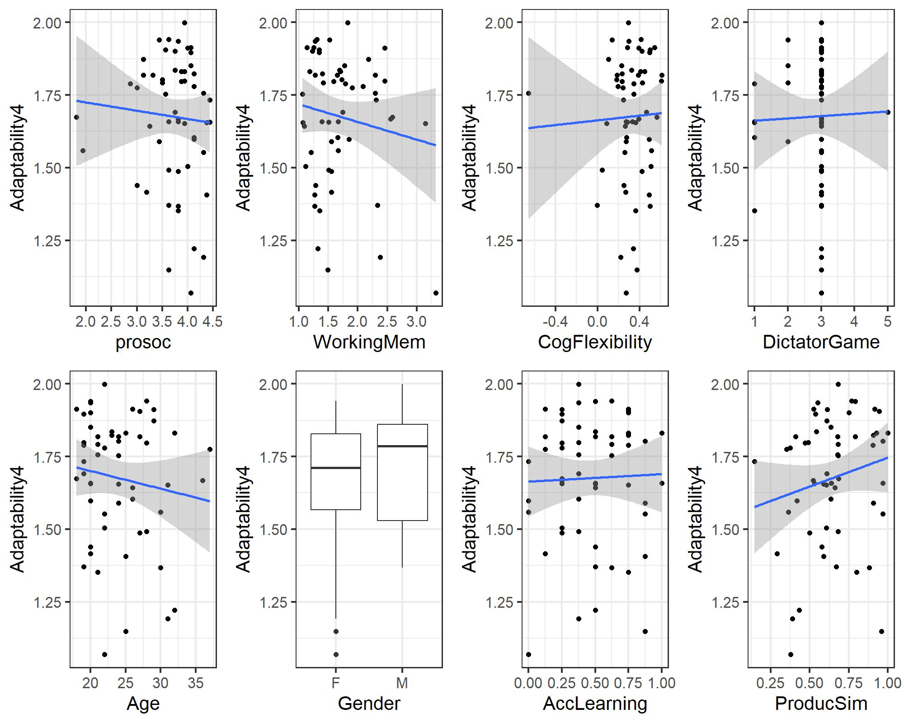
Linear mixed model fit by REML. t-tests use Satterthwaite's method [
lmerModLmerTest]
Formula: Adaptability4 ~ prosoc + WorkingMem + CogFlexibility + DictatorGame +
Age + Gender + AccLearning + DistInitWords + (1 | GroupID)
Data: df_other
REML criterion at convergence: 4
Scaled residuals:
Min 1Q Median 3Q Max
-1.96604 -0.49289 0.08586 0.61195 1.70068
Random effects:
Groups Name Variance Std.Dev.
GroupID (Intercept) 0.02919 0.1709
Residual 0.02484 0.1576
Number of obs: 52, groups: GroupID, 13
Fixed effects:
Estimate Std. Error df t value Pr(>|t|)
(Intercept) 1.600500 0.320951 37.177360 4.987 1.45e-05 ***
prosoc -0.010874 0.051039 35.399959 -0.213 0.8325
WorkingMem 0.006973 0.058866 37.969148 0.118 0.9063
CogFlexibility 0.168275 0.178106 32.881037 0.945 0.3517
DictatorGame -0.014206 0.040208 37.385571 -0.353 0.7258
Age -0.001669 0.005266 34.326135 -0.317 0.7532
GenderM 0.004635 0.057247 34.357287 0.081 0.9359
AccLearning -0.413658 0.196526 34.044594 -2.105 0.0428 *
DistInitWords 0.509615 0.253516 34.979013 2.010 0.0522 .
---
Signif. codes: 0 '***' 0.001 '**' 0.01 '*' 0.05 '.' 0.1 ' ' 1
Correlation of Fixed Effects:
(Intr) prosoc WrkngM CgFlxb DcttrG Age GendrM AccLrn
prosoc -0.712
WorkingMem -0.419 0.160
CogFlexblty -0.282 0.168 0.204
DictatorGam -0.302 0.020 -0.078 -0.131
Age -0.246 -0.079 -0.151 0.014 -0.155
GenderM -0.132 0.125 -0.003 0.115 -0.048 -0.029
AccLearning 0.156 -0.181 0.160 0.109 0.117 -0.105 0.269
DistIntWrds -0.406 0.221 0.028 -0.122 0.040 0.054 -0.146 -0.843 R2m R2c
[1,] 0.07887003 0.5765803 prosoc WorkingMem CogFlexibility DictatorGame Age
1.160912 1.313972 1.121391 1.200576 1.065853
Gender AccLearning DistInitWords
1.197278 4.965576 4.473848 Let’s have a look at how the Adaptbility score of participants evolve with time:
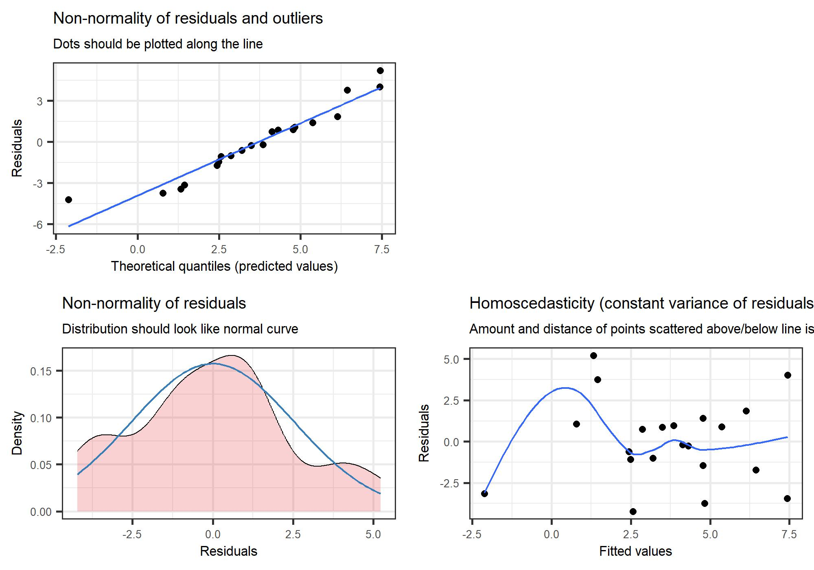
Chapter plots